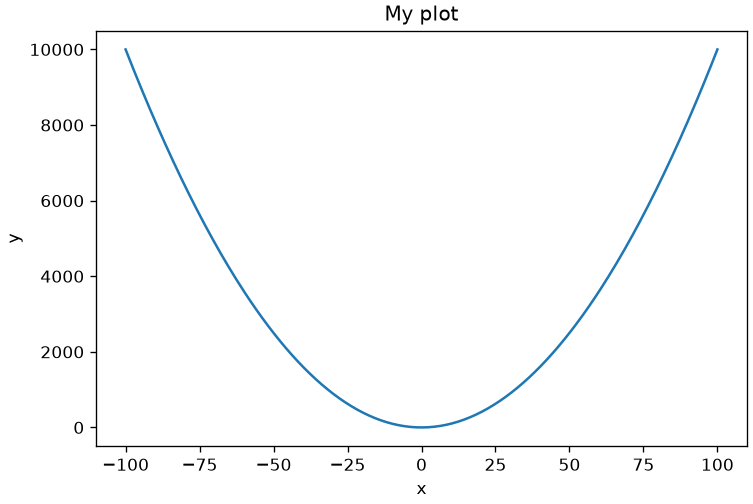
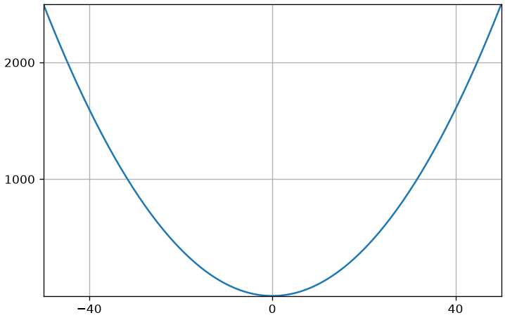
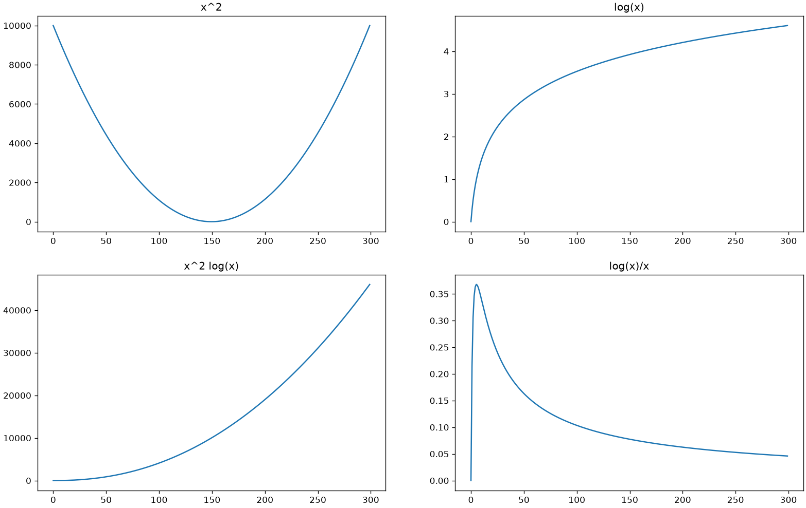
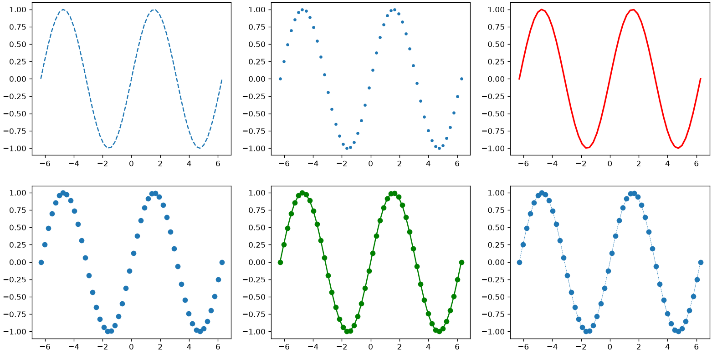
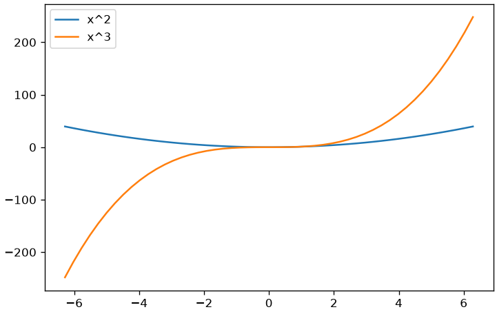
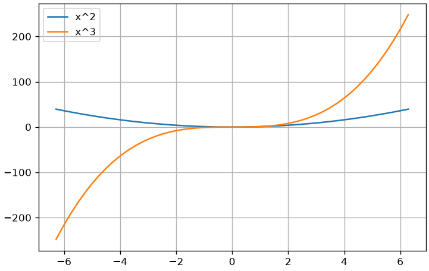

Numpy is the reference library of scipy for scientific computing. The core of the library consists of numpy arrays which allow for easy handling of operations between vectors and matrices. Python arrays are generally tensors, which are numerical structures with a variable number of dimensions, and can therefore be one-dimensional arrays, two-dimensional matrices, or multi-dimensional structures (e.g., 10 x 10 x 10 cuboids). To use numpy arrays, we must first import the numpy package:
import numpy as np #the "as" notation allows us to reference the numpy namespace simply with np in the future
Numpy Arrays
A multi-dimensional numpy array can be defined from a list of lists, as follows:
l = [[1,2,3],[4,5,2],[1,8,3]] #a list containing three listsprint("List of lists:",l) #it is displayed as we defined ita = np.array(l) #I build a numpy array from the list of listsprint("Numpy array:\n",a) #each inner list is identified as a row of a two-dimensional matrixprint("Numpy array from tuple:\n",np.array(((1,2,3),(4,5,6)))) #I can also create numpy arrays from tuples
What is an obvious advantage of NumPy arrays compared to lists, given the examples shown above?
Every numpy array has a shape property that allows us to determine the number of dimensions of the structure:
print(a.shape) #it is a 3 x 3 matrix
(3, 3)
Let’s look at some other examples:
array = np.array([1,2,3,4])matrix = np.array([[1,2,3,4],[5,4,2,3],[7,5,3,2],[0,2,3,1]])tensor = np.array([[[1,2,3,4],['a','b','c','d']],[[5,4,2,3],['a','b','c','d']],[[7,5,3,2],['a','b','c','d']],[[0,2,3,1],['a','b','c','d']]])print('Array:',array, array.shape) # one-dimensional array, will have only one dimensionprint('Matrix:\n',matrix, matrix.shape)print('matrix:\n',tensor, tensor.shape) # tensor, will have two dimensions
m1 = np.array([[1,2,3,4],[5,4,2,3],[7,5,3,2],[0,2,3,1]])m2 = np.array([[8,2,1,4],[0,4,6,1],[4,4,2,0],[0,1,8,6]])print("Sum:",m1+m2) #matrix sumprint("Elementwise product:\n",m1*m2) #element-wise productprint("Power of two:\n",m1**2) #square of elementsprint("Elementwise power:\n",m1**m2) #element-wise powerprint("Matrix multiplication:\n",m1.dot(m2)) #matrix multiplicationprint("Minimum:",m1.min()) #minimumprint("Maximum:",m1.max()) #maximumprint("Minimum along columns:",m1.min(0)) #minimum along columnsprint("Minimum along rows:",m1.min(1)) #minimum along rowsprint("Sum:",m1.sum()) #sum of valuesprint("Mean:",m1.mean()) #mean valueprint("Diagonal:",m1.diagonal()) #main diagonal of the matrixprint("Transposed:\n",m1.T) #transposed matrix
What is the advantage of using the operations illustrated above? What code would be needed to perform the operation a1**a2 if a1 and a2 were Python lists rather than numpy arrays?
Linspace, Arange, Zeros, Ones, Eye and Random
The functions linspace, arange, zeros, ones, eye and random of numpy are useful for generating numeric arrays on the fly. In particular, the function linspace allows generating a sequence of n equally spaced numbers ranging from a minimum value to a maximum value:
a=np.linspace(10,20,5) # generates 5 equally spaced values ranging from 10 to 20print(a)
[10. 12.5 15. 17.5 20. ]
arange is very similar to range, but directly returns a numpy array:
print(np.arange(10)) #numbers from 0 to 9print(np.arange(1,6)) #numbers from 1 to 5print(np.arange(0,7,2)) #even numbers from 0 to 6
[0 1 2 3 4 5 6 7 8 9]
[1 2 3 4 5]
[0 2 4 6]
Question 4
Is it possible to obtain the same result as arange using range? How?
We can create arrays containing zero or one of arbitrary shapes using zeros and ones:
print(np.zeros((3,4)))#zeros and ones take as a parameter a tuple containing the desired dimensionsprint(np.ones((2,1)))
We will talk in more detail about the Gaussian distribution later.
We can generate integers between a minimum (inclusive) and a maximum (exclusive) using randint:
print(np.random.randint(0,50,3))#three values between 0 and 50 (exclusive)print(np.random.randint(0,50,(2,3)))#2x3 matrix of random integer values between 0 and 50 (exclusive)
[45 44 21]
[[41 34 38]
[17 13 30]]
To generate random values reproducibly, you can specify a seed:
What is the effect of re-running the previous cell changing the seed?
max, min, sum, argmax, argmin
It is possible to calculate maxima and minima and sums of a matrix by rows and columns as follows:
mat = np.array([[1,-5,0],[4,3,6],[5,8,-7],[10,6,-12]])print(mat)print()print( mat.max(0))# Column maximumsprint()print(mat.max(1))# Row maximumsprint()print (mat.min(0))# Column minimumsprint()print(mat.min(1))# Row minimumsprint()print(mat.sum(0))# Column sumprint()print(mat.sum(1))# Row sumprint()print(mat.max())# Global maximumprint(mat.min())# Global minimumprint(mat.sum())# Global sum
It is also possible to obtain the indices at which there are maxima and minima using the argmax function:
print(mat.argmax(0))
[3 2 1]
We have a maximum in the fourth row in the first column, one in the third row in the second column, and one in the second row in the third column. Let’s verify it:
Numpy arrays can be indexed in a similar way to Python lists:
arr = np.array([1,2,3,4,5])print("arr[0] ->",arr[0]) #first element of the arrayprint("arr[:3] ->",arr[:3]) #first three elementsprint("arr[1:5:2] ->",arr[1:4:2]) #from the second to the fourth (inclusive) with a step of 2
When indexing an array with more than one dimension using a single index, the first dimension is automatically indexed. Let’s look at some examples with two-dimensional matrices:
mat = np.array(([1,5,2,7],[2,7,3,2],[1,5,2,1]))print("Matrix:\n",mat,mat.shape) #matrix 3 x 4print("mat[0] ->",mat[0]) #a matrix is a collection of rows, so mat[0] returns the first rowprint("mat[-1] ->",mat[-1]) #last rowprint("mat[::2] ->",mat[::2]) #odd rows
Indexing can continue through the other dimensions by specifying an additional index in square brackets or by separating the various indices with a comma:
mat = np.array(([1,5,2,7],[2,7,3,2],[1,5,2,1]))print("Matrix:\n",mat,mat.shape) #matrix 3 x 4print("mat[2][1] ->",mat[2][1]) #third row, second columnprint("mat[0,0] ->",mat[0,0]) #first row, first column (more compact notation)print("mat[0] -> ",mat[0]) #returns the entire first row of the matrixprint("mat[:,0] -> ",mat[:,0]) #returns the first column of the matrix.#The two dots ":" mean "leave everything unchanged along this dimension"print("mat[0,:] ->",mat[0,:]) #alternative notation to get the first row of the matrixprint("mat[0:2,:] ->\n",mat[0:2,:]) #first two rowsprint("mat[:,0:2] ->\n",mat[:,0:2]) #first two columnsprint("mat[-1] ->",mat[-1]) #last row
mat=np.array([[[1,2,3,4],['a','b','c','d']], [[5,4,2,3],['a','b','c','d']], [[7,5,3,2],['a','b','c','d']], [[0,2,3,1],['a','b','c','d']]]) print("mat[:,:,0] ->", mat[:,:,0]) #matrix contained in the "first channel" of the tensorprint("mat[:,:,1] ->",mat[:,:,1]) #matrix contained in the "second channel" of the tensorprint("mat[...,0] ->", mat[...,0]) #matrix contained in the "first channel" of the tensor (alternative notation)print("mat[...,1] ->",mat[...,1]) #matrix contained in the "second channel" of the tensor (alternative notation)#the "..." notation means "leave everything unchanged along the omitted dimensions"
Generally, when a subset of data is extracted from an array, it is referred to as slicing.
Question 6
Python lists do not support slicing. How can one implement a statement of the type a[2:8:2] using Python lists?
Logical Indexing and Slicing
In numpy it is also possible to index arrays in a “logical” way, meaning by passing an array of boolean values as indices. For example, if we want to select the first and third value of an array, we must pass the array [True, False, True] as indices:
x = np.array([1,2,3])print(x[np.array([True,False,True])]) # To select only 1 and 3print(x[np.array([False,True,False])]) # To select only 2
[1 3]
[2]
Logical indexing is very useful when combined with the ability to build logical arrays “on the fly” by specifying a condition that array elements may or may not satisfy. For example:
x = np.arange(10)print(x)print(x>2) #generates an array of boolean values#that will contain True for the values of x#that satisfy the condition x>2print(x==3) #True only for the value 3
By combining these two principles, it is simple to select only some values from an array, based on a condition:
x = np.arange(10)print(x[x%2==0]) # selects even valuesprint(x[x%2!=0]) # selects odd valuesprint(x[x>2]) # selects values greater than 2
[0 2 4 6 8]
[1 3 5 7 9]
[3 4 5 6 7 8 9]
Question 7
Consider the two arrays a=np.array([1,2,3]) and b=np.array([5,2,4]). Use logical indexing to extract the numbers in a that are located at positions containing even values in b.
Reshape
In some cases, it can be useful to change the “shape” of a matrix. For example, a 3x2 matrix can be modified by rearranging its elements to obtain a 2x3 matrix, a 1x6 matrix, or a 6x1 matrix. This can be done using the “reshape” method:
mat = np.array([[1,2],[3,4],[5,6]])print(mat)print(mat.reshape(2,3))print(mat.reshape(1,6))print(mat.reshape(6,1)) #matrix 6 x 1print(mat.reshape(6)) #one-dimensional vectorprint(mat.ravel())#equivalent to the previous one, but parameterless
We note that, if we read by rows (from left to right, from top to bottom), the order of the elements remains unchanged. We can also let numpy calculate one of the dimensions by replacing it with -1:
print(mat.reshape(2,-1))print(mat.reshape(-1,6))
[[1 2 3]
[4 5 6]]
[[1 2 3 4 5 6]]
Reshape can take as input the individual dimensions or a tuple containing the shape. In the latter case, it is convenient to perform operations of this kind:
mat1 = np.random.rand(3,2)mat2 = np.random.rand(2,3)print(mat2.reshape(mat1.shape)) # Give mat2 the same shape as mat1
Numpy allows combining different arrays using two main functions: concatenate and stack. The concatenate function takes as input a list (or tuple) of arrays and allows concatenating them along a specified existing dimension (axis), which by default is zero (row-wise concatenation):
In the case of stack, the arrays were concatenated along a new dimension. It is possible to specify alternative dimensions as in the case of concatenate:
Numpy manages memory dynamically for efficiency reasons. Therefore, an assignment or a slicing operation generally does not create a new copy of the data. Consider for example this code:
The slicing operation b=a[0,0:2] only allowed obtaining a new “view” of a part of a, but the data was not replicated in memory. Therefore, if we modify an element of b, the modification will actually be applied to a:
b[0]=-1print(b)print(a)
[-1 2]
[[-1 2 3]
[ 4 5 6]]
To avoid this kind of behavior, it is possible to use the copy method which forces numpy to create a new copy of the data:
In this new version of the code, a is no longer modified upon modification of b.
Broadcasting
Numpy intelligently handles operations between arrays that have different shapes under certain conditions. Let’s look at a practical example: suppose we have a 2\times3 matrix and a 1\times3 array:
Now, suppose we want to divide, element by element, all the values of each row of the matrix by the values of the array. We can perform the required operation using a for loop:
mat2=mat.copy() # Copy the content of the matrix to not overwrite itfor i inrange(mat2.shape[0]):# Indexes the rows mat2[i]=mat2[i]/arrprint(mat2)
[[0.5 0.66666667 0.375 ]
[2. 1.66666667 0.75 ]]
arr.shape
(3,)
If we didn’t want to use for loops, we could replicate arr to obtain a 2 \times 3 matrix and then perform a simple element-wise division:
The same result can be obtained simply by asking numpy to divide mat by arr:
print(mat/arr)
[[0.5 0.66666667 0.375 ]
[2. 1.66666667 0.75 ]]
This happens because numpy compares the dimensions of the two operands (2 \times 3 and 1 \times 3) and adapts the operand with the smaller shape to the one with the larger shape, by replicating its elements along the unit dimension (the first one). In practice, broadcasting generalizes operations between scalars and vectors/matrices like:
print(2*mat)print(2*arr)
[[ 2. 4. 6.]
[ 8. 10. 12.]]
[ 4 6 16]
In general, when operations are performed between two arrays, numpy compares the shapes dimension by dimension, from the last to the first. Two dimensions are compatible if:
They are equal;
One of them is equal to one.
Furthermore, the two shapes do not necessarily have to have the same number of dimensions.
The product between the two tensors was performed by multiplying the two-dimensional matrices mat1[0,...] and mat2[0,...] by mat2. This is equivalent to repeating the elements of mat2 along the missing dimension and performing a point-by-point product between mat1 and the adapted version of mat2.
In this case, the product between the two tensors was obtained by multiplying all rows of the two-dimensional matrices mat1[0,...] by mat2[0] (first row of mat2) and all rows of the two-dimensional matrices mat1[1,...] by mat2[1] (second row of mat2). This is equivalent to repeating all elements of mat2 along the second dimension (the one containing 1) and performing an element-wise product between mat1 and the adapted version of mat2.
Introduction to Matplotlib
Matplotlib is the reference library for creating graphs in Python. It is a very powerful and well-documented library (https://matplotlib.org/). Let’s look at some classic examples of using the library.
2D plot
Let’s see how to plot the function:
y = x^2.
To plot the function, we will need to provide matplotlib with a series of (x,y) value pairs that satisfy the equation shown above. The simplest way to do this is to:
Define an arbitrary vector of x values extracted from the function’s domain;
Calculate the respective y points using the analytical form shown above;
Plot the values using matplotlib.
The two vectors can be defined as follows:
import numpy as npx = np.linspace(-100,100,300) # linearly sample 300 points between -100 and 100y = x**2# calculate the square of each point in x
Proceed to print:
from matplotlib import pyplot as plt #imports the pyplot module from matplotlib and calls it pltplt.plot(x,y) #plots the x,y pairs as points in the Cartesian spaceplt.xlabel('x') #sets a label for the x-axisplt.ylabel('y') #sets a label for the y-axisplt.title('My plot') #sets the title of the plotplt.show() #shows the plot

It is possible to control various aspects of the plot, including the limits of the x and y axes, the position of the “ticks” (the horizontal and vertical small lines on the axes) or adding a grid. Let’s see some examples:
plt.plot(x,y) #display the same plotplt.xlim([-50,50]) #display x values only between -20 and 40plt.ylim([0,2500]) #and y values only between 0 and 4000plt.xticks([-40,0,40]) #insert only -40, 0 and 40 as "ticks" on the x-axisplt.yticks([1000,2000]) #only 1000 and 2000 as y ticksplt.grid() #add a gridplt.show()

Subplot
It can often be useful to compare different plots. To do this, we can make use of the subplot function, which allows us to construct a “grid of plots”.
Let’s see, for example, how to plot the following functions in a 2 x 2 grid:
plt.figure(figsize=(16,10)) #defines a figure with a given size (in inches)plt.subplot(2,2,1) #defines a 2x2 grid and selects the first cell as the current cellx = np.linspace(-100,100,300)plt.plot(x**2) #first graphplt.title('x^2') #sets a title for the current cellplt.subplot(2,2,2) #still in the same 2x2 grid, selects the second cellx = np.linspace(1,100,300)plt.plot(np.log(x)) #second graphplt.title('log(x)') #sets a title for the current cellplt.subplot(2,2,3) #selects the third cellx = np.linspace(1,100,300)plt.plot(x**2*np.log(x)) #third graphplt.title('x^2 log(x)') #sets a title for the current cellplt.subplot(2,2,4) #selects the fourth cellx = np.linspace(1,100,300)plt.plot(np.log(x)/x) #fourth graphplt.title('log(x)/x') #sets a title for the current cellplt.show() #shows the figure

Colors and styles
It is possible to use different colors and styles for the charts. Below are some examples:
x = np.linspace(-2*np.pi,2*np.pi,50)y = np.sin(x)plt.figure(figsize=(16,8))plt.subplot(231) #abbreviated version of plt.subplot(2,3,1)plt.plot(x,y,'--') #dashed lineplt.subplot(232)plt.plot(x,y,'.') #only pointsplt.subplot(233)plt.plot(x,y,'r', linewidth=2) #red line, linewidth 2plt.subplot(234)plt.plot(x,y,'o') #circlesplt.subplot(235)plt.plot(x,y,'o-g') #circles connected by green linesplt.subplot(236)plt.plot(x,y,'o--', linewidth=0.5) #circles connected by dashed lines, linewidth 0.5plt.show()

Line Overlay and Legend
It’s simple to overlay multiple lines using matplotlib:
plt.figure()plt.plot(x,x**2)plt.plot(x,x**3) # For the second plot, matplotlib will automatically change colorplt.legend(['x^2','x^3']) # We can also add a legend.# The legend elements will be associated with the lines in the order they were plottedplt.show()

Grids
It is often useful to superimpose a grid on your plots. This can be done using plt.grid():
plt.figure()plt.plot(x,x**2)plt.plot(x,x**3) # For the second plot, matplotlib will automatically change colorplt.legend(['x^2','x^3']) # We can also add a legend.# The legend elements will be associated with the lines in the order they were plottedplt.grid()plt.show()

Matplotlib is a very versatile library. On Matplotlib’s official website, there is a gallery of plot examples with their respective code (https://matplotlib.org/stable/gallery/index.html). We will see in more detail how to obtain more complex visualizations during the course.
Introduction to Pandas
We’ve seen how Python, combined with numpy and matplotlib, can be a powerful tool for scientific computing. However, there are other libraries that provide greater abstraction for easier data management and analysis. In this lab, we will cover the basics of the Pandas library, which is useful for data analysis. Specifically, we will see:
How to create and manage data series (Pandas Series);
How to create and manage Pandas DataFrames;
Examples of how to manipulate data in a DataFrame.
Pandas is a high-level library that provides various tools and data structures for data analysis. In particular, Pandas is very useful for loading, manipulating, and visualizing data quickly and conveniently before moving on to the actual analysis. The two main data structures in Pandas are Series and DataFrame.
Series
A Series is a one-dimensional structure (a sequence of data) very similar to a NumPy array. Unlike it, its elements can be indexed using labels, as well as numbers. The values contained in a series can be of any type.
Creation of Series
It is possible to define a Series starting from a list or a NumPy array:
import pandas as pdimport numpy as npnp.random.seed(123) # set a seed for reproducibilitys1 = pd.Series([7,5,2,8,9,6])# alternatively print(pd.Series(np.array([7,5,2])))print(s1)
0 7
1 5
2 2
3 8
4 9
5 6
dtype: int64
The numbers displayed on the left represent the labels of the values contained in the series, which, by default, are numeric and sequential. When defining a series, you can specify appropriate labels (one for each value):
It is possible to define a set also by means of a dictionary that specifies labels and values simultaneously:
s3=pd.Series({'a':14,'h':18,'m':72})print(s3)
a 14
h 18
m 72
dtype: int64
Optionally, you can assign a name to a series:
pd.Series([1,2,3], name='My Series')
0 1
1 2
2 3
Name: My Series, dtype: int64
Question 1
What is the main difference between Pandas Series and Numpy array?
Indexing Series
When the indices are numeric, Series can be indexed like numpy arrays:
print(s1[0]) #indexingprint(s1[0:4:2]) #slicing
7
0 7
2 2
dtype: int64
When indices are the most generic labels, indexing occurs similarly, but slicing cannot be used:
print(s2['c'])
2
Clearly, it is possible to modify the values in a series using indexing:
s2['c']=4s2
a 7
b 5
c 4
d 8
e 9
f 6
dtype: int64
If the specified index does not exist, a new element will be created:
s2['z']=-2s2
a 7
b 5
c 4
d 8
e 9
f 6
z -2
dtype: int64
If we wanted to specify more than one label at a time, we could pass a list of labels:
print(s2[['a','c','d']])
a 7
c 4
d 8
dtype: int64
Series with alphanumeric labels can also be indexed by following the order in which data is entered into the series, in a sense “discarding” the alphanumeric labels and indexing the elements positionally. This effect is achieved using the iloc method:
print(s2,'\n')print("Element at index 'a':",s2['a'])print("First element of the series:",s2.iloc[0])
a 7
b 5
c 4
d 8
e 9
f 6
z -2
dtype: int64
Element at index 'a': 7
First element of the series: 7
In certain cases, it can be useful to reset the index numbering. This can be done using the reset_index method:
print(s3,'\n')print(s3.reset_index(drop=True)) # drop=True indicates to discard old indices
a 14
h 18
m 72
dtype: int64
0 14
1 18
2 72
dtype: int64
Series also allow logical indexing:
print(s1,'\n') # series s1print(s1>2,'\n') # logical indexing to select elements greater than 2print(s1[s1>2],'\n') # application of logical indexing
It is possible to specify the combination of two conditions using the logical operators “|” (or) and “&” (and), remembering to enclose the operands in parentheses:
As with NumPy arrays, memory allocation is dynamically managed for Series. Therefore, if I assign a series to a new variable and modify the second variable, the first one will also be modified:
s11=pd.Series([1,2,3])s12=s11s12[0]=-1s11
0 -1
1 2
2 3
dtype: int64
To obtain a new independent Series, we can use the copy method:
s11=pd.Series([1,2,3])s12=s11.copy()s12[0]=-1s11
0 1
1 2
2 3
dtype: int64
Question 2
What does the following code print to the screen?
s=pd.Series([1,2,3,4,6])print(s[s%2])
Data Types
Series can contain different data types:
pd.Series([2.5,3.4,5.2])
0 2.5
1 3.4
2 5.2
dtype: float64
A Series is associated with a single data type. If we specify heterogeneous data types, the Series will be of type “object”:
s=pd.Series([2.5,'A',5.2])s
0 2.5
1 A
2 5.2
dtype: object
You can change the data type of a Series on the fly with astype in a similar way to how it’s done with Numpy arrays:
which of the following operations return an error? Why?
s.astype(str), s.astype(int)
Missing Data
In Pandas, it’s possible to specify Series (and as we’ll see, DataFrames as well) with missing data. To indicate such values, the value np.nan is used:
missing = pd.Series([2,5,np.nan,8])missing
0 2.0
1 5.0
2 NaN
3 8.0
dtype: float64
The NaN (not a number) values indicate values that can be missing for various reasons (e.g., data resulting from invalid operations, data that were not collected correctly, etc.).
In many cases, it can be useful to discard NaN data. This can be done with the dropna() operation:
missing.dropna()
0 2.0
1 5.0
3 8.0
dtype: float64
Alternatively, we can replace NaN values with a specific value using fillna. We replace the NaNs with zero:
Note that the mean function simply ignored the NaN values.
It is possible to obtain the size of a series using the len function:
print(len(s1))
6
It is possible to obtain statistics on the unique values (i.e. the values of the series, once duplicates have been removed) contained in a series using the unique method:
The result of value_counts is a Series where the indices represent the unique values, and the values are the frequencies with which they appear in the series. The series is sorted by values.
The describe method allows you to calculate various statistics for the values contained in the series:
tmp.describe()
count 100.000000
mean 4.130000
std 2.830765
min 0.000000
25% 2.000000
50% 4.000000
75% 6.000000
max 9.000000
dtype: float64
In operations between series, elements are associated based on their indices. In the case where there is a perfect correspondence between elements, we obtain the following result:
In this case, index 0 was present only in the second series (s2), while index 3 was present only in the first series (s1).
If we want to exclude NaN values (including their indices) we can use the dropna method:
s3=s1+s2print(s3)print(s3.dropna())
0 NaN
1 3.0
2 12.0
3 NaN
dtype: float64
1 3.0
2 12.0
dtype: float64
It is possible to apply a function to all elements of a Series using the apply method. For example, let’s say we want to transform strings contained in a Series into uppercase. We can specify the str.upper function using the apply method:
Try to apply the apply method to a Series, specifying a function that takes two arguments as input. Is it possible to do this? Why?
Conversion to Numpy Array
It is possible to access the values of the series in the form of a numpy array using the values property:
print(s3.values)
[nan 3. 12. nan]
You need to be careful about the fact that values does not create an independent copy of the series, so if we modify the numpy array accessible via values, we are actually modifying the series as well:
a = s3.valuesprint(s3)a[0]=-1print(s3)
0 NaN
1 3.0
2 12.0
3 NaN
dtype: float64
0 -1.0
1 3.0
2 12.0
3 NaN
dtype: float64
Question 5
How can you obtain a Numpy array from a Series such that the two entities are independent?
DataFrame
A DataFrame is essentially a table of numbers in which:
Each row represents a different observation;
Each column represents a variable.
Rows and columns can have names. In particular, it is very common to assign names to columns to indicate which variable each one corresponds to.
DataFrame Construction and Visualization
It is possible to construct a DataFrame from a two-dimensional NumPy array (a matrix):
data = np.random.rand(10,3) # matrix of random values 10 x 3# it's a matrix of 10 observations, each characterized by 3 variablesdf = pd.DataFrame(data,columns=['A','B','C'])df # in jupyter or in an ipython shell we can print the dataframe# by simply writing "df". In a script we should write "print df"
A
B
C
0
0.309884
0.507204
0.280793
1
0.763837
0.108542
0.511655
2
0.909769
0.218376
0.363104
3
0.854973
0.711392
0.392944
4
0.231301
0.380175
0.549162
5
0.556719
0.004135
0.638023
6
0.057648
0.043027
0.875051
7
0.292588
0.762768
0.367865
8
0.873502
0.029424
0.552044
9
0.240248
0.884805
0.460238
Each line has been automatically assigned a numerical index. If we wish, we can also specify names for the lines:
np.random.seed(123)#set a seed for repeatabilitydf = pd.DataFrame(np.random.rand(4,3),columns=['A','B','C'],index=['X','Y','Z','W'])df
A
B
C
X
0.696469
0.286139
0.226851
Y
0.551315
0.719469
0.423106
Z
0.980764
0.684830
0.480932
W
0.392118
0.343178
0.729050
Analogous to what was seen in the case of series, it is possible to construct a DataFrame using a dictionary that specifies the name and values of each column:
You can also specify the number of lines to display:
df_big.head(2)
A
B
C
0
0.317285
0.414826
0.866309
1
0.250455
0.483034
0.985560
In a similar way, we can show the last lines with tail:
df_big.tail(3)
A
B
C
97
0.811953
0.335544
0.349566
98
0.389874
0.754797
0.369291
99
0.242220
0.937668
0.908011
We can obtain the number of rows of the DataFrame using the len function:
print(len(df_big))
100
If we want to know both the number of rows and the number of columns, we can call the shape property:
print(df_big.shape)
(100, 3)
Analogous to what was seen for Series, we can view a DataFrame as a numpy array by calling the values property:
print(df,'\n')print(df.values)
A B C
X 0.696469 0.286139 0.226851
Y 0.551315 0.719469 0.423106
Z 0.980764 0.684830 0.480932
W 0.392118 0.343178 0.729050
[[0.69646919 0.28613933 0.22685145]
[0.55131477 0.71946897 0.42310646]
[0.9807642 0.68482974 0.4809319 ]
[0.39211752 0.34317802 0.72904971]]
The same considerations about memory made for Series also apply to DataFrames. To obtain an independent copy of a DataFrame, you can use the copy method:
df2=df.copy()
Question 6
In what way does a DataFrame mainly differ from a two-dimensional Numpy array? What is the advantage of DataFrames?
Indexing
Pandas provides a range of tools for indexing DataFrames by selecting rows or columns. For example, we can select column B as follows:
s = df['B']print(s, '\n')print("Type of s:", type(s))
X 0.286139
Y 0.719469
Z 0.684830
W 0.343178
Name: B, dtype: float64
Type of s: <class 'pandas.core.series.Series'>
It should be noted that the result of this operation is a Series (a DataFrame is fundamentally a collection of Series, each representing a column) which has the name of the considered column as its name. We can select more than one row by specifying a list of rows:
dfAB = df[['A','C']]dfAB
A
C
X
0.696469
0.226851
Y
0.551315
0.423106
Z
0.980764
0.480932
W
0.392118
0.729050
The result of this operation is instead a DataFrame. Row selection is done using the loc property:
df5 = df.loc['X']df5
A 0.696469
B 0.286139
C 0.226851
Name: X, dtype: float64
The result of this operation is also a Series, but in this case the indices represent the column names, while the name of the series corresponds to the index of the selected row. As with Series, we can use iloc to index rows positionally:
df.iloc[1] #equivalent to df.loc['Y']
A 0.551315
B 0.719469
C 0.423106
Name: Y, dtype: float64
It is also possible to chain indexing operations to select a specific value:
print(df.iloc[1]['A'])print(df['A'].iloc[1])
0.5513147690828912
0.5513147690828912
Even in this case, we can use logical indexing in a similar way to what we saw for numpy:
df_big2=df_big[df_big['C']>0.5]print(len(df_big), len(df_big2))df_big2.head() # some indices are missing as the corresponding rows have been removed
100 53
A
B
C
0
0.317285
0.414826
0.866309
1
0.250455
0.483034
0.985560
3
0.826341
0.603060
0.545068
5
0.681301
0.875457
0.510422
6
0.669314
0.585937
0.624904
It’s possible to combine what we’ve seen so far to manipulate data simply and quickly. Let’s assume we want to select rows for which the sum of the values in B and C is less than 0.7, and let’s assume we are only interested in the A values of those rows (and not the entire row of A, B, C values). The result we expect is a one-dimensional array of values. We can obtain the desired result as follows:
Y 0.551315
Z 0.980764
W 0.392118
Name: A, dtype: float64 (3,)
We can apply indexing also at the level of the entire table (in addition to the level of individual columns):
df>0.3
A
B
C
X
True
False
False
Y
True
True
True
Z
True
True
True
W
True
True
True
If we apply this indexing to the DataFrame, we will get the appearance of some NaNs, which indicate the presence of elements that do not respect the condition considered:
df[df>0.3]
A
B
C
X
0.696469
NaN
NaN
Y
0.551315
0.719469
0.423106
Z
0.980764
0.684830
0.480932
W
0.392118
0.343178
0.729050
We can remove NaN values using the dropna method, as seen in the case of Series. However, in this case, all rows that have at least one NaN will be removed:
df[df>0.3].dropna()
A
B
C
Y
0.551315
0.719469
0.423106
Z
0.980764
0.684830
0.480932
W
0.392118
0.343178
0.729050
We can ask dropna to remove columns with at least one NaN by specifying axis=1:
df[df>0.3].dropna(axis=1)
A
X
0.696469
Y
0.551315
Z
0.980764
W
0.392118
Alternatively, we can replace the NaN values on the fly using the fillna function:
df[df>0.3].fillna('VAL') #replaces NaNs with 'VAL'
A
B
C
X
0.696469
VAL
VAL
Y
0.551315
0.719469
0.423106
Z
0.980764
0.68483
0.480932
W
0.392118
0.343178
0.72905
Even in this case, as seen with Series, we can restore the order of the indices using the reset_index method:
print(df)print(df.reset_index(drop=True))
A B C
X 0.696469 0.286139 0.226851
Y 0.551315 0.719469 0.423106
Z 0.980764 0.684830 0.480932
W 0.392118 0.343178 0.729050
A B C
0 0.696469 0.286139 0.226851
1 0.551315 0.719469 0.423106
2 0.980764 0.684830 0.480932
3 0.392118 0.343178 0.729050
If we don’t specify drop=True, the old indices will be maintained as a new column:
print(df.reset_index())
index A B C
0 X 0.696469 0.286139 0.226851
1 Y 0.551315 0.719469 0.423106
2 Z 0.980764 0.684830 0.480932
3 W 0.392118 0.343178 0.729050
We can set any column as the new index. For example:
df.set_index('A')
B
C
A
0.696469
0.286139
0.226851
0.551315
0.719469
0.423106
0.980764
0.684830
0.480932
0.392118
0.343178
0.729050
It should be noted that this operation does not actually modify the DataFrame, but creates a new “view” of the data with the requested modification.
To use this modified version of the dataframe, we can save it in another variable:
We can remove a column using the drop method and specifying axis=1 to indicate that we want to remove a column:
df.drop('E',axis=1).head()
A
B
C
D
X
0.696469
0.572279
0.226851
0.923321
Y
0.551315
1.438938
0.423106
0.974421
Z
0.326921
0.456553
0.160311
0.487232
W
0.392118
0.686356
0.729050
1.121167
The drop method does not modify the DataFrame but only generates a new “view” without the column to be removed:
df.head()
A
B
C
D
E
X
0.696469
0.572279
0.226851
0.923321
5.0
Y
0.551315
1.438938
0.423106
0.974421
5.0
Z
0.326921
0.456553
0.160311
0.487232
5.0
W
0.392118
0.686356
0.729050
1.121167
5.0
We can actually remove the column by an assignment:
df=df.drop('E',axis=1)df.head()
A
B
C
D
X
0.696469
0.572279
0.226851
0.923321
Y
0.551315
1.438938
0.423106
0.974421
Z
0.326921
0.456553
0.160311
0.487232
W
0.392118
0.686356
0.729050
1.121167
The removal of rows happens in the same way, but you need to specify axis = 0:
df.drop('X', axis=0)
A
B
C
D
Y
0.551315
1.438938
0.423106
0.974421
Z
0.326921
0.456553
0.160311
0.487232
W
0.392118
0.686356
0.729050
1.121167
It is also possible to add a new row at the end of the DataFrame with pd.concat. Since the rows of a DataFrame are Series, we will need to construct a series with the correct indices (corresponding to the DataFrame’s columns) and the correct name (corresponding to the new index), and turn it into a one-row DataFrame:
Insert a new column ‘D’ into the DataFrame that contains the value 1 in all rows where the value of B is greater than the value of C.
Hint: use “astype(int)” to transform booleans into integers.
Operations between and on DataFrames
The operations seen in the case of Series remain defined on DataFrames, with the appropriate differences. Generally, these are applied to all columns of the DataFrame independently:
df.mean() # mean of each column
A 0.491706
B 0.788531
C 0.384830
D 0.876535
dtype: float64
df.max() # maximum of each column
A 0.696469
B 1.438938
C 0.729050
D 1.121167
dtype: float64
df.describe() #statistics for each column
A
B
C
D
count
4.000000
4.000000
4.000000
4.000000
mean
0.491706
0.788531
0.384830
0.876535
std
0.165884
0.443638
0.255159
0.272747
min
0.326921
0.456553
0.160311
0.487232
25%
0.375818
0.543347
0.210216
0.814298
50%
0.471716
0.629317
0.324979
0.948871
75%
0.587603
0.874502
0.499592
1.011108
max
0.696469
1.438938
0.729050
1.121167
Since the columns of a DataFrame are Series, the apply method can be applied to them:
The groupby method allows us to group the rows of a DataFrame by value, with respect to a specified column. Suppose we want to group all rows that have the same value for sex:
df.groupby('sex')
<pandas.core.groupby.generic.DataFrameGroupBy object at 0x1657bbe60>
This operation returns an object of type DataFrameGroupby on which aggregate operations (e.g., sums and averages) can be performed. Let’s now assume we want to calculate the average of all values that fall into the same group (i.e., we calculate the average of the rows that have the same value for sex):
df.groupby('sex').mean(numeric_only=True)
income
age
sex
F
8600.000000
28.400000
M
5333.333333
37.333333
If we are interested in only one of the variables, we can select it before or after the operation on the aggregated data:
sex
F 28.400000
M 37.333333
Name: age, dtype: float64
The table shows the average income and average age of male and female subjects. Since the mean operation can only be applied to numerical values, the Company column has been excluded. We can obtain a similar table showing the sum of incomes and the sum of ages by changing mean to sum:
df.groupby('sex').sum()
income
age
company
sex
F
43000
142
FLZCDXFLZPTXFLZ
M
32000
224
CDXPTXCDXPTXCDXFLZ
In general, it is possible to use various aggregate functions besides mean and sum. Some examples are min, max, std. Two particularly interesting functions to use in this context are count and describe. Specifically, count counts the number of relevant elements, while describe calculates various statistics of the relevant values. Let’s see two examples:
df.groupby('sex').count()
income
age
company
sex
F
5
5
5
M
6
6
6
The number of elements is the same for the various columns as there are no NaN values in the DataFrame.
df.groupby('sex').describe()
income
age
count
mean
std
min
25%
50%
75%
max
count
mean
std
min
25%
50%
75%
max
sex
F
5.0
8600.000000
2880.972058
5000.0
7000.0
8000.0
11000.0
12000.0
5.0
28.400000
6.268971
18.0
27.00
32.0
32.0
33.0
M
6.0
5333.333333
3829.708431
1000.0
2250.0
5000.0
8500.0
10000.0
6.0
37.333333
6.947422
28.0
32.75
37.0
43.5
45.0
For each numerical variable (age and income), several statistics were calculated. Sometimes it can be clearer to visualize the transposed dataframe:
df.groupby('sex').describe().transpose()
sex
F
M
income
count
5.000000
6.000000
mean
8600.000000
5333.333333
std
2880.972058
3829.708431
min
5000.000000
1000.000000
25%
7000.000000
2250.000000
50%
8000.000000
5000.000000
75%
11000.000000
8500.000000
max
12000.000000
10000.000000
age
count
5.000000
6.000000
mean
28.400000
37.333333
std
6.268971
6.947422
min
18.000000
28.000000
25%
27.000000
32.750000
50%
32.000000
37.000000
75%
32.000000
43.500000
max
33.000000
45.000000
This view allows us to compare different statistics of the two variables age and income for M and F.
Question 10
Considering the previously created DataFrame, use groupby to obtain the sum of the incomes of employees of a given company.
Crosstab
Crosstabs allow for the description of relationships between two or more categorical variables. Once a pair of categorical variables is specified, the rows and columns of the crosstab (also known as a “contingency table”) independently enumerate all unique values of the two categorical variables, so that each cell of the crosstab identifies a specific pair of values. Within the cells, the numbers of elements for which the two categorical variables take on a specific pair of values are then reported.
Suppose we want to study the relationships between company and sex:
pd.crosstab(df['sex'],df['company'])
company
CDX
FLZ
PTX
sex
F
1
3
1
M
3
1
2
The table above tells us, for example, that in company CDX, 1 subject is female, while 3 subjects are male. Similarly, one subject from company FLZ is male, while three subjects are female. It is possible to obtain frequencies instead of counts, by using normalize=True:
This table shows the percentages of people working in the three different companies for each gender, e.g., “20% of women work at CDX”. Similarly, we can normalize by columns as follows:
This table shows the percentages of men and women working in each company, e.g., “25% of CDX workers are women”.
If we want to study the relationships between more than two categorical variables, we can specify a list of columns when building the crosstab:
pd.crosstab(df['sex'],[df['age'],df['company']])
age
18
27
28
32
33
35
39
45
company
CDX
FLZ
PTX
CDX
FLZ
PTX
CDX
FLZ
CDX
PTX
sex
F
1
1
0
0
2
1
0
0
0
0
M
0
0
1
1
0
0
1
1
1
1
Each cell of the crosstab above counts the number of observations reporting a specific triplet of values. For example, 1 subject is male, works for PTX, and is 28 years old, while 2 subjects are female, work for FLZ, and are 32 years old.
In addition to reporting counts and frequencies, a crosstab allows for the calculation of statistics for third variables considered non-categorical. Suppose we want to know the average age of people of a given sex working for a given company. We can build a crosstab by specifying a new variable (age) for values. Since some aggregate value needs to be calculated for this variable, we also need to specify aggfunc, for example, mean (to calculate the average of the relevant values):
Suppose we want to build a new DataFrame that, for each row of the df123 DataFrame, contains exactly “NumberOfElements” rows with the value of “NumberOfElements” equal to one. We essentially want to “expand” the DataFrame above as follows:
To do this automatically, we can treat the DataFrame “more explicitly” as a matrix of values by iterating through its rows. The new DataFrame will first be built as a list of Series (the rows of the DataFrame) and then transformed into a DataFrame:
newdat = []for i, row in df123.iterrows(): # iterrows allows iterating over the rows of a DataFramefor j inrange(row['NumberOfElements']): newrow = row.copy() newrow['NumberOfElements']=1 newdat.append(newrow)pd.DataFrame(newdat)
The two dataframes have one column in common that acts as a key and other columns that act as values. The merge operation allows to combine the dataframes based on the keys:
pd.merge(a,b,on='key')
key
a
b
c
d
e
0
k0
v1
v4
v7
v9
v13
1
k1
v2
v5
v8
v11
v4
2
k2
v3
v6
v9
v12
v5
DataFrame Joins
join operations can be applied to combine dataframes with compatible indices:
a = pd.DataFrame({'a': ['v1', 'v2', 'v3'],'b': ['v4', 'v5', 'v6'],'c': ['v7', 'v8', 'v9']}, index = ['k0', 'k1', 'k2'])a
a
b
c
k0
v1
v4
v7
k1
v2
v5
v8
k2
v3
v6
v9
b = pd.DataFrame({'d': ['v9', 'v11', 'v12'],'e': ['v13', 'v4', 'v5']}, index = ['k0', 'k3', 'k2'],)b
d
e
k0
v9
v13
k3
v11
v4
k2
v12
v5
a.join(b)
a
b
c
d
e
k0
v1
v4
v7
v9
v13
k1
v2
v5
v8
NaN
NaN
k2
v3
v6
v9
v12
v5
As can be seen, the join operation only occurs by using the common indexes.
Input/Output
Pandas provides several functions for reading and writing data. We will specifically look at the functions for reading and writing csv files. It is possible to read csv files (https://it.wikipedia.org/wiki/Comma-separated_values) using the pd.read_csv function. Reading can be done from local files by passing the relative path or from URLs:
data=pd.read_csv(DATA +"students.csv")data.head()
admit
gre
gpa
prestige
0
0
380
3.61
3
1
1
660
3.67
3
2
1
800
4.00
1
3
1
640
3.19
4
4
0
520
2.93
4
Likewise, you can write a DataFrame to a CSV file as follows:
data.to_csv('file.csv')
Since indices may not be sequential in a DataFrame, Pandas inserts them into the csv as an “unnamed column”. For example, the first few lines of the file we just wrote (file.csv) are as follows:
Often, data needs to be properly processed to be analyzed. Let’s look at an example of how to combine the tools discussed above to manipulate a real dataset.
We will consider the dataset available at this URL: https://www.kaggle.com/lava18/google-play-store-apps. A copy of the dataset is served by this site for educational purposes, at https://antoninofurnari.github.io/fad-2627/data/googleplaystore.csv, and that is the copy the code below reads. Let’s load the dataset and display the first few rows to ensure it has been loaded correctly:
data = pd.read_csv(DATA +"googleplaystore.csv")data.head()
The dataset contains 10841 observations and 13 variables. We observe that many of the variables (except “Rating”) are of type “object”, even though they represent numerical values (e.g., Reviews, Size, Installs, and Price). Observing the first rows of the DataFrame displayed above, we can deduce that:
Size is not represented as a numerical value as it contains the unit of measurement “M”;
Installs is actually a categorical variable (it has a “+” at the end, thus indicating the “more than xxxx installations” class);
There are no apparent reasons why Reviews and Rating were not interpreted as numbers. Let’s build a filter function that identifies whether a value is convertible to a given type or not:
data['Size']=data['Size'].apply(lambda x : x[:-1])
We verify the existence of non-convertible values:
list(filter(cannot_convert,data['Size']))[:10]
['Varies with devic',
'Varies with devic',
'Varies with devic',
'Varies with devic',
'Varies with devic',
'Varies with devic',
'Varies with devic',
'Varies with devic',
'Varies with devic',
'Varies with devic']
We replace these values with NaN:
data['Size']=data['Size'].replace({'Varies with devic':np.nan})
Let’s re-check for values that cannot be converted:
list(filter(cannot_convert, data['Size']))
['1,000']
We can remove the comma used to indicate thousands and convert to float:
Let’s evaluate whether it’s appropriate to also transform “Installs” into a numerical value. Let’s see how many unique values of “Installs” there are in the dataset:
data['Installs'].nunique()
22
We only have 22 values, which compared to the 10841 observations, indicate that “Installs” is a highly quantized variable, so it probably makes sense to consider it as categorical, rather than a numerical value.
The DataFrame contains NaN values. Depending on the case, it can make sense to keep them or remove them. Since there are many data points, we can remove them with dropna:
data=data.dropna()
We can therefore start exploring the data with the tools we’ve seen. Let’s visualize, for example, the average values of the numerical variables by category:
data.groupby('Category').mean(numeric_only=True)
Rating
Reviews
Size
Price
Category
ART_AND_DESIGN
4.381034
1.874517e+04
12.939655
0.102931
AUTO_AND_VEHICLES
4.147619
1.575057e+04
24.728571
0.000000
BEAUTY
4.291892
5.020243e+03
15.513514
0.000000
BOOKS_AND_REFERENCE
4.320139
2.815291e+04
23.543750
0.145069
BUSINESS
4.119919
2.497765e+04
26.217480
0.249593
COMICS
4.130612
1.254822e+04
34.626531
0.000000
COMMUNICATION
4.102844
5.549962e+05
60.765403
0.197773
DATING
3.957803
2.254489e+04
18.312717
0.086590
EDUCATION
4.387273
6.435159e+04
30.588182
0.163273
ENTERTAINMENT
4.146667
1.621530e+05
21.853333
0.033222
EVENTS
4.478947
3.321605e+03
23.213158
0.000000
FAMILY
4.190347
1.801297e+05
37.459963
1.390074
FINANCE
4.112030
3.903023e+04
31.249624
9.172444
FOOD_AND_DRINK
4.097619
5.103793e+04
24.163095
0.059405
GAME
4.269507
1.386276e+06
46.827823
0.281704
HEALTH_AND_FITNESS
4.223767
4.519072e+04
29.658296
0.154350
HOUSE_AND_HOME
4.162500
2.935998e+04
17.505357
0.000000
LIBRARIES_AND_DEMO
4.204918
1.632359e+04
225.267213
0.000000
LIFESTYLE
4.093571
3.109027e+04
28.650714
6.976429
MAPS_AND_NAVIGATION
4.013684
3.858909e+04
26.282105
0.157474
MEDICAL
4.184259
4.392454e+03
49.643827
3.077901
NEWS_AND_MAGAZINES
4.143787
5.826802e+04
14.948521
0.023550
PARENTING
4.347727
1.999950e+04
21.579545
0.113409
PERSONALIZATION
4.323381
1.257211e+05
50.115827
0.427338
PHOTOGRAPHY
4.147034
3.260313e+05
18.970763
0.331992
PRODUCTIVITY
4.143830
1.854692e+05
38.899149
0.225362
SHOPPING
4.227933
2.624461e+05
33.397207
0.030615
SOCIAL
4.257062
1.830882e+05
24.317514
0.011186
SPORTS
4.204858
2.128411e+05
30.159109
0.324818
TOOLS
4.010742
1.663130e+05
47.929068
0.290047
TRAVEL_AND_LOCAL
4.043125
4.824554e+04
25.357500
0.165688
VIDEO_PLAYERS
4.025862
2.074172e+05
22.881897
0.008534
WEATHER
4.241176
7.639225e+04
24.805882
0.459608
Question 12
Display the average number of reviews per type (variable Type).
Exercises
Exercise 1
Define a 4x4 matrix, then:
Print the first row of the matrix;
Print the second column of the matrix;
Sum the first and last columns of the matrix;
Sum the elements along the main diagonal;
Print the number of elements in the matrix.
Exercise 2
Generate an array of 100 numbers between 2 and 4 and calculate the sum of the elements whose squares have a value greater than 8.
Exercise 3
Generate the following matrix writing the smallest amount of code possible:
0 1 2
3 4 5
6 7 8
Repeat the exercise generating a 25 \times 13 matrix of the same type.
Construct a new DataFrame that contains the same columns as the considered DataFrame and that for each row of it contains NumberOfElements new rows with category equal to Category of which CheckedElements with value of CheckedElements equal to one and the rest with value of CheckedElements equal to zero.
The result of the manipulation should be equal to the following dataset:
---title: "Python for data science crash course"stem: lab_03_python_for_data_scienceformat: html: code-tools: true ipynb: default---::: {.callout-tip icon=false}## Chapter resources[Open in Colab](https://colab.research.google.com/github/antoninofurnari/fad-2627/blob/main/notes/lab_03_python_for_data_science.ipynb){.btn .btn-sm .btn-outline-primary}[Download PDF](../files/chapters/lab_03_python_for_data_science.pdf){.btn .btn-sm .btn-outline-primary .btn-chapter-pdf}[Practice quiz](../quiz.html){.btn .btn-sm .btn-outline-primary}:::```{python}#| echo: false# Datasets are served by the site itself, so the same code runs here, on a# local clone and on Colab. See site/data/MANIFEST.yml.from pathlib import PathDATA ="../data/"if Path("../data").is_dir() else"https://antoninofurnari.github.io/fad-2627/data/"```## Numpy**Numpy** is the reference library of **scipy** for scientific computing. The core of the library consists of **numpy arrays** which allow for easy handling of operations between vectors and matrices. Python arrays are generally **tensors**, which are numerical structures with a variable number of dimensions, and can therefore be one-dimensional arrays, two-dimensional matrices, or multi-dimensional structures (e.g., 10 x 10 x 10 cuboids). To use numpy arrays, we must first import the **numpy** package:```{python}import numpy as np #the "as" notation allows us to reference the numpy namespace simply with np in the future```## Numpy ArraysA multi-dimensional numpy array can be defined from a list of lists, as follows:```{python}l = [[1,2,3],[4,5,2],[1,8,3]] #a list containing three listsprint("List of lists:",l) #it is displayed as we defined ita = np.array(l) #I build a numpy array from the list of listsprint("Numpy array:\n",a) #each inner list is identified as a row of a two-dimensional matrixprint("Numpy array from tuple:\n",np.array(((1,2,3),(4,5,6)))) #I can also create numpy arrays from tuples```> **Question 1**>> What is an obvious advantage of NumPy arrays compared to lists, given the examples shown above?Every numpy array has a _shape_ property that allows us to determine the number of dimensions of the structure:```{python}print(a.shape) #it is a 3 x 3 matrix```Let's look at some other examples:```{python}array = np.array([1,2,3,4])matrix = np.array([[1,2,3,4],[5,4,2,3],[7,5,3,2],[0,2,3,1]])tensor = np.array([[[1,2,3,4],['a','b','c','d']],[[5,4,2,3],['a','b','c','d']],[[7,5,3,2],['a','b','c','d']],[[0,2,3,1],['a','b','c','d']]])print('Array:',array, array.shape) # one-dimensional array, will have only one dimensionprint('Matrix:\n',matrix, matrix.shape)print('matrix:\n',tensor, tensor.shape) # tensor, will have two dimensions```> **Question 2**>> In Numpy, is there a formal difference between a one-dimensional array and a matrix containing a single row (or a single column)?Numpy arrays support element-by-element operations. Let's look at the main operations of this type:```{python}a1 = np.array([1,2,3,4]) a2 = np.array([4,3,8,1]) print("Sum:",a1+a2) #Vector sumprint("Elementwise multiplication:",a1*a2) #Element-wise multiplicationprint("Power of two:",a1**2) #Square of elementsprint("Elementwise power:",a1**a2) #Element-wise powerprint("Scalar product:",a1.dot(a2)) #Vector scalar productprint("Minimum:",a1.min()) #Array minimumprint("Maximum:",a1.max()) #Array maximumprint("Sum:",a2.sum()) #Sum of all array valuesprint("Product:",a2.prod()) #Product of all array valuesprint("Mean:",a1.mean()) #Mean of all array values```Operations on matrices:```{python}m1 = np.array([[1,2,3,4],[5,4,2,3],[7,5,3,2],[0,2,3,1]])m2 = np.array([[8,2,1,4],[0,4,6,1],[4,4,2,0],[0,1,8,6]])print("Sum:",m1+m2) #matrix sumprint("Elementwise product:\n",m1*m2) #element-wise productprint("Power of two:\n",m1**2) #square of elementsprint("Elementwise power:\n",m1**m2) #element-wise powerprint("Matrix multiplication:\n",m1.dot(m2)) #matrix multiplicationprint("Minimum:",m1.min()) #minimumprint("Maximum:",m1.max()) #maximumprint("Minimum along columns:",m1.min(0)) #minimum along columnsprint("Minimum along rows:",m1.min(1)) #minimum along rowsprint("Sum:",m1.sum()) #sum of valuesprint("Mean:",m1.mean()) #mean valueprint("Diagonal:",m1.diagonal()) #main diagonal of the matrixprint("Transposed:\n",m1.T) #transposed matrix```> **Question 3**>> What is the advantage of using the operations illustrated above? What code would be needed to perform the operation `a1**a2` if `a1` and `a2` were Python lists rather than numpy arrays?## Linspace, Arange, Zeros, Ones, Eye and RandomThe functions **linspace**, **arange**, **zeros**, **ones**, **eye** and **random** of **numpy** are useful for generating numeric arrays on the fly. In particular, the function **linspace** allows generating a sequence of **n** equally spaced numbers ranging from a minimum value to a maximum value:```{python}a=np.linspace(10,20,5) # generates 5 equally spaced values ranging from 10 to 20print(a)```**arange** is very similar to **range**, but directly returns a **numpy** array:```{python}print(np.arange(10)) #numbers from 0 to 9print(np.arange(1,6)) #numbers from 1 to 5print(np.arange(0,7,2)) #even numbers from 0 to 6```> **Question 4**>> Is it possible to obtain the same result as `arange` using `range`? How?We can create arrays containing zero or one of arbitrary shapes using **zeros** and **ones**:```{python}print(np.zeros((3,4)))#zeros and ones take as a parameter a tuple containing the desired dimensionsprint(np.ones((2,1)))```The function **eye** allows you to create an identity square matrix:```{python}print(np.eye(3))print(np.eye(5))```To build an array of random values (uniform distribution) between 0 and 1 (zero included, one excluded), just write:```{python}print(np.random.rand(5)) #an array with 5 random values between 0 and 1print(np.random.rand(3,2)) #a 3x2 matrix of random values between 0 and 1```We can generate an array of random values normally (Gaussian) distributed with **randn**:```{python}print(np.random.randn(5,2))```We will talk in more detail about the Gaussian distribution later.We can generate integers between a minimum (inclusive) and a maximum (exclusive) using **randint**:```{python}print(np.random.randint(0,50,3))#three values between 0 and 50 (exclusive)print(np.random.randint(0,50,(2,3)))#2x3 matrix of random integer values between 0 and 50 (exclusive)```To generate random values reproducibly, you can specify a seed:```{python}np.random.seed(123)print(np.random.rand(5))```The code above (including the seed definition) returns the same results if rerun:```{python}np.random.seed(123)print(np.random.rand(5))```> **Question 5**>> What is the effect of re-running the previous cell changing the seed?## max, min, sum, argmax, argminIt is possible to calculate maxima and minima and sums of a matrix by rows and columns as follows:```{python}mat = np.array([[1,-5,0],[4,3,6],[5,8,-7],[10,6,-12]])print(mat)print()print( mat.max(0))# Column maximumsprint()print(mat.max(1))# Row maximumsprint()print (mat.min(0))# Column minimumsprint()print(mat.min(1))# Row minimumsprint()print(mat.sum(0))# Column sumprint()print(mat.sum(1))# Row sumprint()print(mat.max())# Global maximumprint(mat.min())# Global minimumprint(mat.sum())# Global sum```It is also possible to obtain the indices at which there are maxima and minima using the argmax function:```{python}print(mat.argmax(0))```We have a maximum in the fourth row in the first column, one in the third row in the second column, and one in the second row in the third column. Let's verify it:```{python}print(mat[3,0])print(mat[2,1])print(mat[1,2])print(mat.max(0))```Similarly:```{python}print(mat.argmax(1))print(mat.argmin(0))print(mat.argmin(1))```## Indexing and SlicingNumpy arrays can be indexed in a similar way to Python lists:```{python}arr = np.array([1,2,3,4,5])print("arr[0] ->",arr[0]) #first element of the arrayprint("arr[:3] ->",arr[:3]) #first three elementsprint("arr[1:5:2] ->",arr[1:4:2]) #from the second to the fourth (inclusive) with a step of 2```When indexing an array with more than one dimension using a single index, the first dimension is automatically indexed. Let's look at some examples with two-dimensional matrices:```{python}mat = np.array(([1,5,2,7],[2,7,3,2],[1,5,2,1]))print("Matrix:\n",mat,mat.shape) #matrix 3 x 4print("mat[0] ->",mat[0]) #a matrix is a collection of rows, so mat[0] returns the first rowprint("mat[-1] ->",mat[-1]) #last rowprint("mat[::2] ->",mat[::2]) #odd rows```Let's see some examples with multi-dimensional tensors:```{python}tens = np.array(([[1,5,2,7], [2,7,3,2], [1,5,2,1]], [[1,5,2,7], [2,7,3,2], [1,5,2,1]]))print("Matrix:\n",tens,tens.shape) #tensor 2x3x4print("tens[0] ->",tens[0])#this is the first 3x4 matrixprint("tens[-1] ->",tens[-1])#last 3x4 matrix```Indexing can continue through the other dimensions by specifying an additional index in square brackets or by separating the various indices with a comma:```{python}mat = np.array(([1,5,2,7],[2,7,3,2],[1,5,2,1]))print("Matrix:\n",mat,mat.shape) #matrix 3 x 4print("mat[2][1] ->",mat[2][1]) #third row, second columnprint("mat[0,0] ->",mat[0,0]) #first row, first column (more compact notation)print("mat[0] -> ",mat[0]) #returns the entire first row of the matrixprint("mat[:,0] -> ",mat[:,0]) #returns the first column of the matrix.#The two dots ":" mean "leave everything unchanged along this dimension"print("mat[0,:] ->",mat[0,:]) #alternative notation to get the first row of the matrixprint("mat[0:2,:] ->\n",mat[0:2,:]) #first two rowsprint("mat[:,0:2] ->\n",mat[:,0:2]) #first two columnsprint("mat[-1] ->",mat[-1]) #last row```Case of multi-dimensional tensors:```{python}mat=np.array([[[1,2,3,4],['a','b','c','d']], [[5,4,2,3],['a','b','c','d']], [[7,5,3,2],['a','b','c','d']], [[0,2,3,1],['a','b','c','d']]]) print("mat[:,:,0] ->", mat[:,:,0]) #matrix contained in the "first channel" of the tensorprint("mat[:,:,1] ->",mat[:,:,1]) #matrix contained in the "second channel" of the tensorprint("mat[...,0] ->", mat[...,0]) #matrix contained in the "first channel" of the tensor (alternative notation)print("mat[...,1] ->",mat[...,1]) #matrix contained in the "second channel" of the tensor (alternative notation)#the "..." notation means "leave everything unchanged along the omitted dimensions"```Generally, when a subset of data is extracted from an array, it is referred to as **slicing**.> **Question 6**>> Python lists do not support slicing. How can one implement a statement of the type `a[2:8:2]` using Python lists?## Logical Indexing and SlicingIn numpy it is also possible to index arrays in a "logical" way, meaning by passing an array of boolean values as indices. For example, if we want to select the first and third value of an array, we must pass the array `[True, False, True]` as indices:```{python}x = np.array([1,2,3])print(x[np.array([True,False,True])]) # To select only 1 and 3print(x[np.array([False,True,False])]) # To select only 2```Logical indexing is very useful when combined with the ability to build logical arrays "on the fly" by specifying a condition that array elements may or may not satisfy. For example:```{python}x = np.arange(10)print(x)print(x>2) #generates an array of boolean values#that will contain True for the values of x#that satisfy the condition x>2print(x==3) #True only for the value 3```By combining these two principles, it is simple to select only some values from an array, based on a condition:```{python}x = np.arange(10)print(x[x%2==0]) # selects even valuesprint(x[x%2!=0]) # selects odd valuesprint(x[x>2]) # selects values greater than 2```> **Question 7**>> Consider the two arrays `a=np.array([1,2,3])` and `b=np.array([5,2,4])`. Use logical indexing to extract the numbers in `a` that are located at positions containing even values in `b`.## ReshapeIn some cases, it can be useful to change the "shape" of a matrix. For example, a 3x2 matrix can be modified by rearranging its elements to obtain a 2x3 matrix, a 1x6 matrix, or a 6x1 matrix. This can be done using the "reshape" method:```{python}mat = np.array([[1,2],[3,4],[5,6]])print(mat)print(mat.reshape(2,3))print(mat.reshape(1,6))print(mat.reshape(6,1)) #matrix 6 x 1print(mat.reshape(6)) #one-dimensional vectorprint(mat.ravel())#equivalent to the previous one, but parameterless```We note that, if we read by rows (from left to right, from top to bottom), the order of the elements remains unchanged. We can also let numpy calculate one of the dimensions by replacing it with -1:```{python}print(mat.reshape(2,-1))print(mat.reshape(-1,6))```Reshape can take as input the individual dimensions or a tuple containing the shape. In the latter case, it is convenient to perform operations of this kind:```{python}mat1 = np.random.rand(3,2)mat2 = np.random.rand(2,3)print(mat2.reshape(mat1.shape)) # Give mat2 the same shape as mat1```## Composing Arrays Using `concatenate` and `stack`Numpy allows combining different arrays using two main functions: `concatenate` and `stack`. The `concatenate` function takes as input a list (or tuple) of arrays and allows concatenating them along a specified existing dimension (`axis`), which by default is zero (row-wise concatenation):```{python}a=np.arange(9).reshape(3,3)print(a,a.shape,"\n")cat=np.concatenate([a,a])print(cat,cat.shape,"\n")cat2=np.concatenate([a,a,a])print(cat2,cat2.shape)```It is possible to concatenate arrays along a different dimension by specifying it using the `axis` parameter:```{python}a=np.arange(9).reshape(3,3)print(a,a.shape,"\n")cat=np.concatenate([a,a], axis=1) #column-wise concatenationprint(cat,cat.shape,"\n")cat2=np.concatenate([a,a,a], axis=1) #column-wise concatenationprint(cat2,cat2.shape)```For the concatenation to be compatible, the arrays in the list must have the same dimensions along those that **are not concatenated**:```{python}print(cat.shape,a.shape) #concatenation along axis 0, dimensions along other axes must be equal``````pythonnp.concatenate([cat,a], axis=0) #concatenation by columns #error!```The `stack` function, unlike `concatenate`, allows concatenating arrays along a new dimension. Compare the outputs of the two functions:```{python}cat=np.concatenate([a,a])print(cat,cat.shape)stack=np.stack([a,a])print(stack,stack.shape)```In the case of `stack`, the arrays were concatenated along a new dimension. It is possible to specify alternative dimensions as in the case of `concatenate`:```{python}stack=np.stack([a,a],axis=1)print(stack,stack.shape)```In this case, the arrays have been concatenated along the second dimension.```{python}stack=np.stack([a,a],axis=2)print(stack,stack.shape)```In this case, the arrays were concatenated along the last dimension.## TypesEvery numpy array has its type (see https://docs.scipy.org/doc/numpy-1.13.0/user/basics.types.html for the list of supported types). We can see the type of an array by inspecting the `dtype` property:```{python}print(mat1.dtype)```We can specify the type during array construction:```{python}mat = np.array([[1,2,3],[4,5,6]],int)print(mat.dtype)```We can also change the type of an array on the fly using `astype`. This is useful, for example, if we want to perform a non-integer division:```{python}print(mat/2)print(mat.astype(float)/2)```## Memory Management in NumpyNumpy manages memory dynamically for efficiency reasons. Therefore, an assignment or a slicing operation generally **does not create a new copy of the data**. Consider for example this code:```{python}a=np.array([[1,2,3],[4,5,6]])print(a)b=a[0,0:2]print(b)```The slicing operation `b=a[0,0:2]` only allowed obtaining a new "view" of a part of `a`, but the data was not replicated in memory. Therefore, if we modify an element of b, the modification will actually be applied to `a`:```{python}b[0]=-1print(b)print(a)```To avoid this kind of behavior, it is possible to use the `copy` method which forces numpy to create a new copy of the data:```{python}a=np.array([[1,2,3],[4,5,6]])print(a)b=a[0,0:2].copy()print(b)b[0]=-1print(b)print(a)```In this new version of the code, `a` is no longer modified upon modification of `b`.## BroadcastingNumpy intelligently handles operations between arrays that have different shapes under certain conditions. Let's look at a practical example: suppose we have a $2\times3$ matrix and a $1\times3$ array:```{python}mat=np.array([[1,2,3],[4,5,6]],dtype=float)arr=np.array([2,3,8])print(mat)print(arr)```Now, suppose we want to divide, element by element, all the values of each row of the matrix by the values of the array. We can perform the required operation using a for loop:```{python}mat2=mat.copy() # Copy the content of the matrix to not overwrite itfor i inrange(mat2.shape[0]):# Indexes the rows mat2[i]=mat2[i]/arrprint(mat2)``````{python}arr.shape```If we didn't want to use for loops, we could replicate _arr_ to obtain a $2 \times 3$ matrix and then perform a simple element-wise division:```{python}arr2=np.stack([arr,arr])print(arr2)print(mat/arr2)```The same result can be obtained simply by asking numpy to divide mat by arr:```{python}print(mat/arr)```This happens because **numpy** compares the dimensions of the two operands ($2 \times 3$ and $1 \times 3$) and adapts the operand with the smaller shape to the one with the larger shape, by replicating its elements along the unit dimension (the first one). In practice, broadcasting generalizes operations between scalars and vectors/matrices like:```{python}print(2*mat)print(2*arr)```In general, when operations are performed between two arrays, numpy compares the shapes dimension by dimension, from the last to the first. Two dimensions are compatible if: * They are equal; * One of them is equal to one.Furthermore, the two shapes do not necessarily have to have the same number of dimensions.For example, the following shapes are compatible: $$ 2 \times 3 \times 5 \\ 2 \times 3 \times 5 $$ $$ 2 \times 3 \times 5 \\ 2 \times 1 \times 5 $$ $$ 2 \times 3 \times 5 \\ 3 \times 5 $$ $$ 2 \times 3 \times 5 \\ 3 \times 1 $$Let's see more examples of broadcasting:```{python}mat1=np.array([[[1,3,5],[7,6,2]],[[6,5,2],[8,9,9]]])mat2=np.array([[2,1,3],[7,6,2]])print("Mat1 shape",mat1.shape)print("Mat2 shape",mat2.shape)print()print("Mat1\n",mat1)print()print("Mat2\n",mat2)print()print("Mat1*Mat2\n",mat1*mat2)```The product between the two tensors was performed by multiplying the two-dimensional matrices `mat1[0,...]` and `mat2[0,...]` by `mat2`. This is equivalent to repeating the elements of `mat2` along the missing dimension and performing a point-by-point product between `mat1` and the adapted version of `mat2`.```{python}mat1=np.array([[[1,3,5],[7,6,2]],[[6,5,2],[8,9,9]]])mat2=np.array([[[1,3,5]],[[6,5,2]]])print("Mat1 shape",mat1.shape)print("Mat2 shape",mat2.shape)print()print("Mat1\n",mat1)print()print("Mat2\n",mat2)print()print("Mat1*Mat2\n",mat1*mat2)```In this case, the product between the two tensors was obtained by multiplying all rows of the two-dimensional matrices `mat1[0,...]` by `mat2[0]` (first row of mat2) and all rows of the two-dimensional matrices `mat1[1,...]` by `mat2[1]` (second row of mat2). This is equivalent to repeating all elements of `mat2` along the second dimension (the one containing $1$) and performing an element-wise product between `mat1` and the adapted version of `mat2`.## Introduction to Matplotlib**Matplotlib** is the reference library for creating graphs in Python. It is a very powerful and well-documented library (https://matplotlib.org/). Let's look at some classic examples of using the library.## 2D plotLet's see how to plot the function:$$y = x^2.$$To plot the function, we will need to provide matplotlib with a series of $(x,y)$ value pairs that satisfy the equation shown above. The simplest way to do this is to: * Define an arbitrary vector of $x$ values extracted from the function's domain; * Calculate the respective $y$ points using the analytical form shown above; * Plot the values using matplotlib.The two vectors can be defined as follows:```{python}import numpy as npx = np.linspace(-100,100,300) # linearly sample 300 points between -100 and 100y = x**2# calculate the square of each point in x```Proceed to print:```{python}from matplotlib import pyplot as plt #imports the pyplot module from matplotlib and calls it pltplt.plot(x,y) #plots the x,y pairs as points in the Cartesian spaceplt.xlabel('x') #sets a label for the x-axisplt.ylabel('y') #sets a label for the y-axisplt.title('My plot') #sets the title of the plotplt.show() #shows the plot```It is possible to control various aspects of the plot, including the limits of the x and y axes, the position of the "ticks" (the horizontal and vertical small lines on the axes) or adding a grid. Let's see some examples:```{python}plt.plot(x,y) #display the same plotplt.xlim([-50,50]) #display x values only between -20 and 40plt.ylim([0,2500]) #and y values only between 0 and 4000plt.xticks([-40,0,40]) #insert only -40, 0 and 40 as "ticks" on the x-axisplt.yticks([1000,2000]) #only 1000 and 2000 as y ticksplt.grid() #add a gridplt.show()```## SubplotIt can often be useful to compare different plots. To do this, we can make use of the subplot function, which allows us to construct a "grid of plots".Let's see, for example, how to plot the following functions in a 2 x 2 grid:$$y=x^2, \ \ \ y=log(x), \ \ \ y=x^2 \cdot log(x), \ \ \ y=log(x)/x$$```{python}plt.figure(figsize=(16,10)) #defines a figure with a given size (in inches)plt.subplot(2,2,1) #defines a 2x2 grid and selects the first cell as the current cellx = np.linspace(-100,100,300)plt.plot(x**2) #first graphplt.title('x^2') #sets a title for the current cellplt.subplot(2,2,2) #still in the same 2x2 grid, selects the second cellx = np.linspace(1,100,300)plt.plot(np.log(x)) #second graphplt.title('log(x)') #sets a title for the current cellplt.subplot(2,2,3) #selects the third cellx = np.linspace(1,100,300)plt.plot(x**2*np.log(x)) #third graphplt.title('x^2 log(x)') #sets a title for the current cellplt.subplot(2,2,4) #selects the fourth cellx = np.linspace(1,100,300)plt.plot(np.log(x)/x) #fourth graphplt.title('log(x)/x') #sets a title for the current cellplt.show() #shows the figure```## Colors and stylesIt is possible to use different colors and styles for the charts. Below are some examples:```{python}x = np.linspace(-2*np.pi,2*np.pi,50)y = np.sin(x)plt.figure(figsize=(16,8))plt.subplot(231) #abbreviated version of plt.subplot(2,3,1)plt.plot(x,y,'--') #dashed lineplt.subplot(232)plt.plot(x,y,'.') #only pointsplt.subplot(233)plt.plot(x,y,'r', linewidth=2) #red line, linewidth 2plt.subplot(234)plt.plot(x,y,'o') #circlesplt.subplot(235)plt.plot(x,y,'o-g') #circles connected by green linesplt.subplot(236)plt.plot(x,y,'o--', linewidth=0.5) #circles connected by dashed lines, linewidth 0.5plt.show()```## Line Overlay and LegendIt's simple to overlay multiple lines using **matplotlib**:```{python}plt.figure()plt.plot(x,x**2)plt.plot(x,x**3) # For the second plot, matplotlib will automatically change colorplt.legend(['x^2','x^3']) # We can also add a legend.# The legend elements will be associated with the lines in the order they were plottedplt.show()```## GridsIt is often useful to superimpose a grid on your plots. This can be done using `plt.grid()`:```{python}plt.figure()plt.plot(x,x**2)plt.plot(x,x**3) # For the second plot, matplotlib will automatically change colorplt.legend(['x^2','x^3']) # We can also add a legend.# The legend elements will be associated with the lines in the order they were plottedplt.grid()plt.show()```Matplotlib is a very versatile library. On Matplotlib's official website, there is a gallery of plot examples with their respective code (https://matplotlib.org/stable/gallery/index.html). We will see in more detail how to obtain more complex visualizations during the course.## Introduction to PandasWe've seen how Python, combined with numpy and matplotlib, can be a powerful tool for scientific computing. However, there are other libraries that provide greater abstraction for easier data management and analysis. In this lab, we will cover the basics of the Pandas library, which is useful for data analysis. Specifically, we will see:* How to create and manage data series (Pandas Series);* How to create and manage Pandas DataFrames;* Examples of how to manipulate data in a DataFrame.Pandas is a high-level library that provides various tools and data structures for data analysis. In particular, Pandas is very useful for loading, manipulating, and visualizing data quickly and conveniently before moving on to the actual analysis. The two main data structures in Pandas are `Series` and `DataFrame`.## SeriesA `Series` is a one-dimensional structure (a sequence of data) very similar to a NumPy array. Unlike it, its elements can be indexed using labels, as well as numbers. The values contained in a series can be of any type.### Creation of SeriesIt is possible to define a `Series` starting from a list or a NumPy array:```{python}import pandas as pdimport numpy as npnp.random.seed(123) # set a seed for reproducibilitys1 = pd.Series([7,5,2,8,9,6])# alternatively print(pd.Series(np.array([7,5,2])))print(s1)```The numbers displayed on the left represent the labels of the values contained in the series, which, by default, are numeric and sequential. When defining a series, you can specify appropriate labels (one for each value):```{python}values = [7,5,2,8,9,6]labels = ['a','b','c','d','e','f']s2 = pd.Series(values, index=labels)print(s2)```It is possible to define a set also by means of a dictionary that specifies labels and values simultaneously:```{python}s3=pd.Series({'a':14,'h':18,'m':72})print(s3)```Optionally, you can assign a name to a series:```{python}pd.Series([1,2,3], name='My Series')```> **Question 1**> > What is the main difference between Pandas `Series` and Numpy `array`?### Indexing SeriesWhen the indices are numeric, Series can be indexed like numpy arrays:```{python}print(s1[0]) #indexingprint(s1[0:4:2]) #slicing```When indices are the most generic labels, indexing occurs similarly, but slicing cannot be used:```{python}print(s2['c'])```Clearly, it is possible to modify the values in a series using indexing:```{python}s2['c']=4s2```If the specified index does not exist, a new element will be created:```{python}s2['z']=-2s2```If we wanted to specify more than one label at a time, we could pass a list of labels:```{python}print(s2[['a','c','d']])```Series with alphanumeric labels can also be indexed by following the order in which data is entered into the series, in a sense "discarding" the alphanumeric labels and indexing the elements positionally. This effect is achieved using the `iloc` method:```{python}print(s2,'\n')print("Element at index 'a':",s2['a'])print("First element of the series:",s2.iloc[0])```In certain cases, it can be useful to reset the index numbering. This can be done using the `reset_index` method:```{python}print(s3,'\n')print(s3.reset_index(drop=True)) # drop=True indicates to discard old indices```Series also allow logical indexing:```{python}print(s1,'\n') # series s1print(s1>2,'\n') # logical indexing to select elements greater than 2print(s1[s1>2],'\n') # application of logical indexing```It is possible to specify the combination of two conditions using the logical operators "|" (or) and "&" (and), remembering to enclose the operands in parentheses:```{python}(s1>2) & (s1<6)``````{python}s1[(s1>2) & (s1<6)]```Similarly for the or:```{python}(s1<2) | (s1>6)``````{python}print(s1[(s1<2) | (s1>6)])```As with NumPy arrays, memory allocation is dynamically managed for Series. Therefore, if I assign a series to a new variable and modify the second variable, the first one will also be modified:```{python}s11=pd.Series([1,2,3])s12=s11s12[0]=-1s11```To obtain a new independent Series, we can use the `copy` method:```{python}s11=pd.Series([1,2,3])s12=s11.copy()s12[0]=-1s11```> **Question 2**> > What does the following code print to the screen?> > ```python> s=pd.Series([1,2,3,4,6])> print(s[s%2])> ```### Data Types`Series` can contain different data types:```{python}pd.Series([2.5,3.4,5.2])```A `Series` is associated with a single data type. If we specify heterogeneous data types, the `Series` will be of type "object":```{python}s=pd.Series([2.5,'A',5.2])s```You can change the data type of a Series on the fly with `astype` in a similar way to how it's done with Numpy arrays:```{python}s=pd.Series([2,3,8,9,12,45])print(s)print(s.astype(float))```> **Question 3**> > Considering the Series defined as follows:> > ```python> s=pd.Series([2.5,'A',5.2])> ```> > which of the following operations return an error? Why?> > ```python> s.astype(str), s.astype(int)> ```### Missing DataIn Pandas, it's possible to specify Series (and as we'll see, DataFrames as well) with missing data. To indicate such values, the value `np.nan` is used:```{python}missing = pd.Series([2,5,np.nan,8])missing```The `NaN` (not a number) values indicate values that can be missing for various reasons (e.g., data resulting from invalid operations, data that were not collected correctly, etc.).In many cases, it can be useful to discard `NaN` data. This can be done with the `dropna()` operation:```{python}missing.dropna()```Alternatively, we can replace `NaN` values with a specific value using `fillna`. We replace the `NaN`s with zero:```{python}missing = pd.Series([2, 5, np.nan, 8])print(missing)missing.fillna(0)```### Operations on and Between SeriesThe main operations available for NumPy arrays are defined on Series:```{python}print("Min:",s1.min())print("Max:",s1.max())print("Mean:",s1.mean())```Let's see how to replace missing values in a series with the average value:```{python}data = pd.Series([1,5,2,np.nan,5,2,6,np.nan,9,2,3])datadata.fillna(data.mean())```Note that the `mean` function simply ignored the `NaN` values.It is possible to obtain the size of a series using the `len` function:```{python}print(len(s1))```It is possible to obtain statistics on the unique values (i.e. the values of the series, once duplicates have been removed) contained in a series using the `unique` method:```{python}print("Unique:",s1.unique()) #returns unique values```To know the number of unique values in a series, we can use the `nunique` method:```{python}s1.nunique()```It is possible to obtain the unique values of a series along with the frequencies with which they appear in the series using the `value_counts` method:```{python}tmp = pd.Series(np.random.randint(0,10,100))print(tmp.unique()) # unique valuestmp.value_counts() # unique values with their frequencies```The result of `value_counts` is a `Series` where the indices represent the unique values, and the values are the frequencies with which they appear in the series. The series is sorted by values.The `describe` method allows you to calculate various statistics for the values contained in the series:```{python}tmp.describe()```In operations between series, elements are associated based on their indices. In the case where there is a perfect correspondence between elements, we obtain the following result:```{python}print(pd.Series([1,2,3])+pd.Series([4,4,4]),'\n')print(pd.Series([1,2,3])*pd.Series([4,4,4]),'\n')```In the event that some indices are missing, the corresponding boxes will be filled with `NaN` (not a number) to indicate the absence of the value:```{python}s1 = pd.Series([1,4,2], index = [1,2,3])s2 = pd.Series([4,2,8], index = [0,1,2])print(s1,'\n')print(s2,'\n')print(s1+s2)```In this case, index `0` was present only in the second series (`s2`), while index `3` was present only in the first series (`s1`).If we want to exclude `NaN` values (including their indices) we can use the `dropna` method:```{python}s3=s1+s2print(s3)print(s3.dropna())```It is possible to apply a function to all elements of a Series using the `apply` method. For example, let's say we want to transform strings contained in a Series into uppercase. We can specify the `str.upper` function using the `apply` method:```{python}s=pd.Series(['aba','cda','daf','acc'])s.apply(str.upper)```Using apply we can also apply user-defined functions using lambda expressions or using the usual syntax:```{python}def my_function(x): y="String: "return y+xs.apply(my_function)```The same function can be written more compactly as a lambda expression:```{python}s.apply(lambda x: "String: "+x)```It is possible to modify all occurrences of a given value in a Series using the `replace` method:```{python}ser = pd.Series([1,2,15,-1,7,9,2,-1])print(ser)ser=ser.replace({-1:0}) # replace all occurrences of "-1" with zerosprint(ser)```> **Question 4**> > Try to apply the `apply` method to a `Series`, specifying a function that takes two arguments as input. Is it possible to do this? Why?### Conversion to Numpy ArrayIt is possible to access the values of the series in the form of a numpy array using the `values` property:```{python}print(s3.values)```You need to be careful about the fact that `values` does not create an independent copy of the series, so if we modify the numpy array accessible via `values`, we are actually modifying the series as well:```{python}a = s3.valuesprint(s3)a[0]=-1print(s3)```> **Question 5**> > How can you obtain a Numpy array from a Series such that the two entities are independent?## DataFrameA **DataFrame** is essentially a table of numbers in which: * Each row represents a different _observation_; * Each column represents a variable.Rows and columns can have names. In particular, it is very common to assign names to columns to indicate which variable each one corresponds to.### DataFrame Construction and VisualizationIt is possible to construct a DataFrame from a two-dimensional NumPy array (a matrix):```{python}data = np.random.rand(10,3) # matrix of random values 10 x 3# it's a matrix of 10 observations, each characterized by 3 variablesdf = pd.DataFrame(data,columns=['A','B','C'])df # in jupyter or in an ipython shell we can print the dataframe# by simply writing "df". In a script we should write "print df"```Each line has been automatically assigned a numerical index. If we wish, we can also specify names for the lines:```{python}np.random.seed(123)#set a seed for repeatabilitydf = pd.DataFrame(np.random.rand(4,3),columns=['A','B','C'],index=['X','Y','Z','W'])df```Analogous to what was seen in the case of series, it is possible to construct a DataFrame using a dictionary that specifies the name and values of each column:```{python}pd.DataFrame({'A':np.random.rand(10), 'B':np.random.rand(10), 'C':np.random.rand(10)})```In the case of very large datasets, we can display only the first few rows using the **head** method:```{python}df_big = pd.DataFrame(np.random.rand(100,3),columns=['A','B','C'])df_big.head()```You can also specify the number of lines to display:```{python}df_big.head(2)```In a similar way, we can show the last lines with **tail**:```{python}df_big.tail(3)```We can obtain the number of rows of the **DataFrame** using the **len** function:```{python}print(len(df_big))```If we want to know both the number of rows and the number of columns, we can call the **shape** property:```{python}print(df_big.shape)```Analogous to what was seen for Series, we can view a DataFrame as a numpy array by calling the `values` property:```{python}print(df,'\n')print(df.values)```The same considerations about memory made for Series also apply to DataFrames. To obtain an independent copy of a DataFrame, you can use the `copy` method:```{python}df2=df.copy()```> **Question 6**> > In what way does a DataFrame mainly differ from a two-dimensional Numpy array? What is the advantage of DataFrames?### IndexingPandas provides a range of tools for indexing `DataFrames` by selecting rows or columns. For example, we can select column B as follows:```{python}s = df['B']print(s, '\n')print("Type of s:", type(s))```It should be noted that the result of this operation is a `Series` (a `DataFrame` is fundamentally a collection of `Series`, each representing a column) which has the name of the considered column as its name. We can select more than one row by specifying a list of rows:```{python}dfAB = df[['A','C']]dfAB```The result of this operation is instead a `DataFrame`. Row selection is done using the `loc` property:```{python}df5 = df.loc['X']df5```The result of this operation is also a `Series`, but in this case the indices represent the column names, while the name of the series corresponds to the index of the selected row. As with `Series`, we can use `iloc` to index rows positionally:```{python}df.iloc[1] #equivalent to df.loc['Y']```It is also possible to chain indexing operations to select a specific value:```{python}print(df.iloc[1]['A'])print(df['A'].iloc[1])```Even in this case, we can use logical indexing in a similar way to what we saw for numpy:```{python}df_big2=df_big[df_big['C']>0.5]print(len(df_big), len(df_big2))df_big2.head() # some indices are missing as the corresponding rows have been removed```It's possible to combine what we've seen so far to manipulate data simply and quickly. Let's assume we want to select rows for which the sum of the values in B and C is less than $0.7$, and let's assume we are only interested in the A values of those rows (and not the entire row of A, B, C values). The result we expect is a one-dimensional array of values. We can obtain the desired result as follows:```{python}average_result = df[(df['B'] + df['C']) >0.7]['A']print(average_result.head(), average_result.shape)```We can apply indexing also at the level of the entire table (in addition to the level of individual columns):```{python}df>0.3```If we apply this indexing to the `DataFrame`, we will get the appearance of some `NaN`s, which indicate the presence of elements that do not respect the condition considered:```{python}df[df>0.3]```We can remove `NaN` values using the `dropna` method, as seen in the case of `Series`. However, in this case, **all rows that have at least one `NaN` will be removed**:```{python}df[df>0.3].dropna()```We can ask `dropna` to remove **columns with at least one NaN** by specifying `axis=1`:```{python}df[df>0.3].dropna(axis=1)```Alternatively, we can replace the `NaN` values on the fly using the `fillna` function:```{python}df[df>0.3].fillna('VAL') #replaces NaNs with 'VAL'```Even in this case, as seen with `Series`, we can restore the order of the indices using the `reset_index` method:```{python}print(df)print(df.reset_index(drop=True))```If we don't specify `drop=True`, the old indices will be maintained as a new column:```{python}print(df.reset_index())```We can set any column as the new index. For example:```{python}df.set_index('A')```It should be noted that this operation does not actually modify the DataFrame, but creates a new "view" of the data with the requested modification.To use this modified version of the dataframe, we can save it in another variable:```{python}df2=df.set_index('A')df2```> **Question 7**> > Consider the following DataFrame:> > ```python> pd.DataFrame({'A':[1,2,3,4],'B':[3,2,6,7],'C':[0,2,-1,12]})> ```> > Use logical indexing to select the rows where the sum of the values in 'C' and 'A' is greater than $1$.### DataFrame ManipulationThe values contained in the rows and columns of the dataframe can be easily modified. The following example multiplies all values in column B by 2:```{python}df['B'] *=2df.head()```Similarly, we can divide all the values in row with index 2 by 3:```{python}df.iloc[2]=df.iloc[2]/3df.head()```We can define a new column with a simple assignment operation:```{python}df['D'] = df['A'] + df['C']df['E'] = np.ones(len(df))*5df.head()```We can remove a column using the `drop` method and specifying `axis=1` to indicate that we want to remove a column:```{python}df.drop('E',axis=1).head()```The `drop` method does not modify the DataFrame but only generates a new "view" without the column to be removed:```{python}df.head()```We can actually remove the column by an assignment:```{python}df=df.drop('E',axis=1)df.head()```The removal of rows happens in the same way, but you need to specify `axis = 0`:```{python}df.drop('X', axis=0)```It is also possible to add a new row at the end of the DataFrame with `pd.concat`. Since the rows of a DataFrame are Series, we will need to construct a series with the correct indices (corresponding to the DataFrame's columns) and the correct name (corresponding to the new index), and turn it into a one-row DataFrame:```{python}new_row=pd.Series([1,2,3,4], index=['A','B','C','D'], name='H')print(new_row)pd.concat([df, new_row.to_frame().T])```We can add more than one row at a time by specifying a DataFrame:```{python}new_rows = pd.DataFrame({'A':[0,1],'B':[2,3],'C':[4,5],'D':[6,7]}, index=['H','K'])new_rows``````{python}pd.concat([df, new_rows])```> **Question 8**> > Consider the following DataFrame:> > ```python> pd.DataFrame({'A':[1,2,3,4],'B':[3,2,6,7],'C':[0,2,-1,12]})> ```> > Insert a new column 'D' into the DataFrame that contains the value $1$ in all rows where the value of B is greater than the value of C.> > <b>Hint:</b> use "astype(int)" to transform booleans into integers.### Operations between and on DataFramesThe operations seen in the case of Series remain defined on DataFrames, with the appropriate differences. Generally, these are applied to all columns of the DataFrame independently:```{python}df.mean() # mean of each column``````{python}df.max() # maximum of each column``````{python}df.describe() #statistics for each column```Since the columns of a DataFrame are Series, the `apply` method can be applied to them:```{python}df['A']=df['A'].apply(lambda x: "Number: "+str(x))df```It is possible to sort the rows of a DataFrame by the values of one of the columns using the `sort_values` method:```{python}df.sort_values(by='D')```To make the sorting permanent, we need to perform an assignment:```{python}df=df.sort_values(by='D')df```> **Question 9**> > Consider the following DataFrame:> > ```python> pd.DataFrame({'A':[1,2,3,4],'B':[3,2,6,7],'C':[0,2,-1,12]})> ```> > Transform the "B" column so that the new values are:> * equal to zero if previously even;> * equal to -1 if previously odd.### Remove Rows and ColumnsYou can remove a row or a column from a DataFrame:```{python}data = pd.DataFrame({'A':[1,2,3,4],'B':[3,2,6,7],'C':[0,2,-1,12]})print(data)data.drop(1) # remove row 1data.drop('B', axis=1) # remove column B```Please note that the operations shown above do not modify the original array, but return a modified copy of it:```{python}data = pd.DataFrame({'A':[1,2,3,4],'B':[3,2,6,7],'C':[0,2,-1,12]})print(data)data.drop(1) # remove row 1data```We can perform a persistent modification using `inplace=True`:```{python}data = pd.DataFrame({'A':[1,2,3,4],'B':[3,2,6,7],'C':[0,2,-1,12]})print(data)data.drop(1, inplace=True) # remove row 1data```Or more explicitly as follows:```{python}data = pd.DataFrame({'A':[1,2,3,4],'B':[3,2,6,7],'C':[0,2,-1,12]})print(data)data = data.drop(1) # remove row 1data```### GroupbyThe `groupby` method allows you to group the rows of a `DataFrame` and call aggregate functions on them. Let's consider a more representative `DataFrame`:```{python}df=pd.DataFrame({'income':[10000,11000,9000,3000,1000,5000,7000,2000,7000,12000,8000],\'age':[32,32,45,35,28,18,27,45,39,33,32],\'sex':['M','F','M','M','M','F','F','M','M','F','F'],\'company':['CDX','FLZ','PTX','CDX','PTX','CDX','FLZ','CDX','FLZ','PTX','FLZ']})df```The `groupby` method allows us to group the rows of a `DataFrame` by value, with respect to a specified column. Suppose we want to group all rows that have the same value for **sex**:```{python}df.groupby('sex')```This operation returns an object of type `DataFrameGroupby` on which aggregate operations (e.g., sums and averages) can be performed. Let's now assume we want to calculate the average of all values that fall into the same group (i.e., we calculate the average of the rows that have the same value for sex):```{python}df.groupby('sex').mean(numeric_only=True)```If we are interested in only one of the variables, we can select it before or after the operation on the aggregated data:```{python}df.groupby('sex')['age'].mean() #equivalently: df.groupby('sex').mean()['age']```The table shows the average income and average age of male and female subjects. Since the mean operation can only be applied to numerical values, the Company column has been excluded. We can obtain a similar table showing the sum of incomes and the sum of ages by changing `mean` to `sum`:```{python}df.groupby('sex').sum()```In general, it is possible to use various aggregate functions besides `mean` and `sum`. Some examples are `min`, `max`, `std`. Two particularly interesting functions to use in this context are `count` and `describe`. Specifically, `count` counts the number of relevant elements, while describe calculates various statistics of the relevant values. Let's see two examples:```{python}df.groupby('sex').count()```The number of elements is the same for the various columns as there are no `NaN` values in the DataFrame.```{python}df.groupby('sex').describe()```For each numerical variable (age and income), several statistics were calculated. Sometimes it can be clearer to visualize the transposed dataframe:```{python}df.groupby('sex').describe().transpose()```This view allows us to compare different statistics of the two variables `age` and `income` for `M` and `F`.> **Question 10**> > > Considering the previously created DataFrame, use `groupby` to obtain the sum of the incomes of employees of a given company.### Crosstab`Crosstabs` allow for the description of relationships between two or more **categorical** variables. Once a pair of categorical variables is specified, the rows and columns of the crosstab (also known as a "contingency table") independently enumerate all unique values of the two categorical variables, so that each cell of the crosstab identifies a specific pair of values. Within the cells, the numbers of elements for which the two categorical variables take on a specific pair of values are then reported.Suppose we want to study the relationships between `company` and `sex`:```{python}pd.crosstab(df['sex'],df['company'])```The table above tells us, for example, that in company CDX, $1$ subject is female, while $3$ subjects are male. Similarly, one subject from company FLZ is male, while three subjects are female. It is possible to obtain frequencies instead of counts, by using `normalize=True`:```{python}pd.crosstab(df['sex'],df['company'], normalize=True)```Alternatively, we can normalize the table only by rows or only by columns by specifying `normalize='index'` or `normalize='columns'`:```{python}pd.crosstab(df['sex'],df['company'], normalize='index')```This table shows the percentages of people working in the three different companies for each gender, e.g., "20% of women work at CDX". Similarly, we can normalize by columns as follows:```{python}pd.crosstab(df['sex'],df['company'], normalize='columns')```This table shows the percentages of men and women working in each company, e.g., "25% of CDX workers are women".If we want to study the relationships between more than two categorical variables, we can specify a list of columns when building the crosstab:```{python}pd.crosstab(df['sex'],[df['age'],df['company']])```Each cell of the crosstab above counts the number of observations reporting a specific triplet of values. For example, 1 subject is male, works for PTX, and is 28 years old, while 2 subjects are female, work for FLZ, and are 32 years old.In addition to reporting counts and frequencies, a crosstab allows for the calculation of statistics for third variables considered non-categorical. Suppose we want to know the average age of people of a given sex working for a given company. We can build a crosstab by specifying a new variable (age) for `values`. Since some aggregate value needs to be calculated for this variable, we also need to specify `aggfunc`, for example, `mean` (to calculate the average of the relevant values):```{python}pd.crosstab(df['sex'],df['company'], values=df['age'], aggfunc='mean')```The table tells us that the average age of male employees for CDX is $37.33$ years.> **Question 11**>>> Construct a crosstab that, for each company, reports the number of employees of a given age.### "Explicit" Manipulation of DataFramesIn some cases, it can be useful to treat DataFrames "explicitly" as matrices of values. Consider, for example, the following DataFrame:```{python}df123 = pd.DataFrame({'Category':[1,2,3], 'NumberOfElements':[3,1,2]})df123```Suppose we want to build a new DataFrame that, for each row of the `df123` DataFrame, contains exactly "NumberOfElements" rows with the value of "NumberOfElements" equal to one. We essentially want to "expand" the DataFrame above as follows:```{python}df123 = pd.DataFrame({'Category':[1,1,1,2,3,3], 'NumberOfElements':[1,1,1,1,1,1]})df123```To do this automatically, we can treat the DataFrame "more explicitly" as a matrix of values by iterating through its rows. The new DataFrame will first be built as a list of Series (the rows of the DataFrame) and then transformed into a DataFrame:```{python}newdat = []for i, row in df123.iterrows(): # iterrows allows iterating over the rows of a DataFramefor j inrange(row['NumberOfElements']): newrow = row.copy() newrow['NumberOfElements']=1 newdat.append(newrow)pd.DataFrame(newdat)``````{python}pd.DataFrame({'Category':[1,2,3], 'NumberOfElements':[3,5,3], 'CheckedElements':[1,2,1]})```### DataFrame ConcatenationDataFrames can be concatenated by rows as shown below:```{python}d1 = pd.DataFrame({'A':[1,2,3,4],'B':[3,2,6,7],'C':[0,2,-1,12]})d2 = pd.DataFrame({'A':[92,8],'B':[44,-2],'C':[0,2]})print(d1)print(d2)``````{python}pd.concat([d1,d2])```If the columns are not compatible, `NaN` will appear:```{python}d1 = pd.DataFrame({'A':[1,2,3,4],'B':[3,2,6,7],'C':[0,2,-1,12]})d2 = pd.DataFrame({'A':[92,8],'D':[0,2]})pd.concat([d1,d2])```Concatenation can also occur by columns:```{python}d1 = pd.DataFrame({'A':[1,2],'B':[3,7],'C':[-1,12]})d2 = pd.DataFrame({'A':[92,8],'D':[0,2]})pd.concat([d1,d2], axis=1)```### DataFrame MergeTwo DataFrames can be merged using a `merge` operation similar to what happens in databases. Let's consider two example dataframes:```{python}a = pd.DataFrame({'key': ['k0', 'k1', 'k2'],'a': ['v1', 'v2', 'v3'],'b': ['v4', 'v5', 'v6'],'c': ['v7', 'v8', 'v9']})a``````{python}b = pd.DataFrame({'key': ['k0', 'k1', 'k2'],'d': ['v9', 'v11', 'v12'],'e': ['v13', 'v4', 'v5']})b```The two dataframes have one column in common that acts as a key and other columns that act as values. The merge operation allows to combine the dataframes based on the keys:```{python}pd.merge(a,b,on='key')```### DataFrame Joins`join` operations can be applied to combine dataframes with compatible indices:```{python}a = pd.DataFrame({'a': ['v1', 'v2', 'v3'],'b': ['v4', 'v5', 'v6'],'c': ['v7', 'v8', 'v9']}, index = ['k0', 'k1', 'k2'])a``````{python}b = pd.DataFrame({'d': ['v9', 'v11', 'v12'],'e': ['v13', 'v4', 'v5']}, index = ['k0', 'k3', 'k2'],)b``````{python}a.join(b)```As can be seen, the join operation only occurs by using the common indexes.### Input/OutputPandas provides several functions for reading and writing data. We will specifically look at the functions for reading and writing `csv` files. It is possible to read csv files (https://it.wikipedia.org/wiki/Comma-separated_values) using the `pd.read_csv` function. Reading can be done from local files by passing the relative path or from URLs:```{python}data=pd.read_csv(DATA +"students.csv")data.head()```Likewise, you can write a DataFrame to a CSV file as follows:```{python}data.to_csv('file.csv')```Since indices may not be sequential in a DataFrame, Pandas inserts them into the csv as an "unnamed column". For example, the first few lines of the file we just wrote (file.csv) are as follows:```,admit,gre,gpa,prestige0,0,380,3.61,31,1,660,3.67,32,1,800,4.0,13,1,640,3.19,44,0,520,2.93,4```As you can see, the first column contains the index values, but it has no name. This can cause problems when we reload the DataFrame:```{python}data=pd.read_csv('file.csv')data.head()```We can solve the problem in several ways:* Eliminate the "Unnamed: 0" column from the newly loaded DataFrame (only if the indices are sequential);* Specify to use the "Unnamed: 0" column as the index column during loading;* Save the DataFrame without indices (only if the indices are sequential).Let's look at the three cases:```{python}data=pd.read_csv('file.csv')data.drop('Unnamed: 0', axis=1).head()``````{python}data=pd.read_csv('file.csv', index_col='Unnamed: 0')data.head()``````{python}data.to_csv('file.csv', index=False)pd.read_csv('file.csv').head()```## Data Manipulation ExampleOften, data needs to be properly processed to be analyzed. Let's look at an example of how to combine the tools discussed above to manipulate a real dataset.We will consider the dataset available at this URL: https://www.kaggle.com/lava18/google-play-store-apps. A copy of the dataset is served by this site for educational purposes, at `https://antoninofurnari.github.io/fad-2627/data/googleplaystore.csv`, and that is the copy the code below reads. Let's load the dataset and display the first few rows to ensure it has been loaded correctly:```{python}data = pd.read_csv(DATA +"googleplaystore.csv")data.head()```Display the dataset properties:```{python}data.info()```The dataset contains $10841$ observations and $13$ variables. We observe that many of the variables (except "Rating") are of type "object", even though they represent numerical values (e.g., Reviews, Size, Installs, and Price). Observing the first rows of the DataFrame displayed above, we can deduce that:* Size is not represented as a numerical value as it contains the unit of measurement "M";* Installs is actually a categorical variable (it has a "+" at the end, thus indicating the "more than xxxx installations" class);There are no apparent reasons why Reviews and Rating were not interpreted as numbers. Let's build a filter function that identifies whether a value is convertible to a given type or not:```{python}def cannot_convert(x, t=float):try: t(x)returnFalseexcept:returnTrueprint(cannot_convert('12'))print(cannot_convert('12f'))```We apply the filter to the Review column to display values that cannot be converted:```{python}list(filter(cannot_convert,data['Reviews']))```We can replace this value with its full version using the `replace` method:```{python}data['Reviews']=data['Reviews'].replace({'3.0M':3000000})```At this point, we can convert the column's value types to integers:```{python}data['Reviews']=data['Reviews'].astype(int)```Let's visualize the DataFrame information again:```{python}data.info()```Reviews is now a whole. We perform a similar analysis on the Price variable:```{python}list(filter(cannot_convert, data['Price']))[:10] #display only the first 10 elements```We can convert strings to float by removing the initial dollar using `apply`:```{python}def strip_dollar(x):if x[0]=='$':return x[1:]else:return xdata['Price']=data['Price'].apply(strip_dollar)```Let's see if there are any values that cannot be converted:```{python}list(filter(cannot_convert, data['Price']))```Since we don't know how to interpret the value "Everyone", let's replace it with a NaN:```{python}data['Price']=data['Price'].replace({'Everyone':np.nan})```Now we can proceed with the conversion:```{python}data['Price'] = data['Price'].astype(float)data.info()```We also modify "Size" by removing the final "M":```{python}data['Size']=data['Size'].apply(lambda x : x[:-1])```We verify the existence of non-convertible values:```{python}list(filter(cannot_convert,data['Size']))[:10]```We replace these values with NaN:```{python}data['Size']=data['Size'].replace({'Varies with devic':np.nan})```Let's re-check for values that cannot be converted:```{python}list(filter(cannot_convert, data['Size']))```We can remove the comma used to indicate thousands and convert to float:```{python}data['Size']=data['Size'].apply(lambda x: float(str(x).replace(',','')))``````{python}data.info()```Let's evaluate whether it's appropriate to also transform "Installs" into a numerical value. Let's see how many unique values of "Installs" there are in the dataset:```{python}data['Installs'].nunique()```We only have $22$ values, which compared to the 10841 observations, indicate that "Installs" is a highly quantized variable, so it probably makes sense to consider it as categorical, rather than a numerical value.The DataFrame contains `NaN` values. Depending on the case, it can make sense to keep them or remove them. Since there are many data points, we can remove them with `dropna`:```{python}data=data.dropna()```We can therefore start exploring the data with the tools we've seen. Let's visualize, for example, the average values of the numerical variables by category:```{python}data.groupby('Category').mean(numeric_only=True)```> **Question 12**> > Display the average number of reviews per type (variable Type).## Exercises> **Exercise 1**>> Define a 4x4 matrix, then:> * Print the first row of the matrix;> * Print the second column of the matrix;> * Sum the first and last columns of the matrix;> * Sum the elements along the main diagonal;> * Print the number of elements in the matrix.> **Exercise 2**>> Generate an array of $100$ numbers between $2$ and $4$ and calculate the sum of the elements whose squares have a value greater than $8$.> **Exercise 3**>> Generate the following matrix writing the smallest amount of code possible:>> ```> 0 1 2> 3 4 5> 6 7 8> ```>> Repeat the exercise generating a $25 \times 13$ matrix of the same type.> Exercise 4> > Write the code to obtain this diagram:> > ![image.png]()> Exercise 5> > > Load the dataset available at the following URL: https://raw.githubusercontent.com/agconti/kaggle-titanic/master/data/train.csv so as to use the values of the "PassengerId" column as indices and apply the following transformations:> > * Remove rows containing NaN values;> * Modify the DataFrame by replacing every occurrence of "male" with "M" and every occurrence of "female" with "F" in the "Sex" column;> * Insert a new column "Old" with a value of "1" if Age is greater than the average age of passengers and "0" otherwise;> * Convert the values in the "Age" column to integers.> Exercise 6> > Consider the dataset loaded and modified in the previous exercise. Find the name of the passenger with ticket code "345779".> Exercise 7> > What are the names of the 5 youngest passengers?> Exercise 8> > Consider the dataset loaded and modified in the previous exercise. Select all observations relating to passengers between 20 and 30 years of age.> Exercise 9> > Consider the dataset loaded and modified in the previous exercises. Calculate the average fare paid by female passengers in second class.> Exercise 10> > Consider the dataset loaded and modified in the previous exercises. Construct a crosstab to answer the following questions:> * How many male passengers survived?> * How many female passengers did not survive?> Exercise 11> > Consider the dataset loaded and modified in the previous exercises. Construct a crosstab that allows you to answer the following questions:> * How many male passengers survived in first class?> * How many female passengers survived in third class?> * How many male passengers survived in third class?> Exercise 12> > Consider the following DataFrame:>> ```python > pd.DataFrame({'Category':[1,2,3], 'NumberOfElements':[3,2,3], 'CheckedElements':[1,2,1]})> ```> > Construct a new DataFrame that contains the same columns as the considered DataFrame and that for each row of it contains `NumberOfElements` new rows with category equal to `Category` of which `CheckedElements` with value of `CheckedElements` equal to one and the rest with value of `CheckedElements` equal to zero.> > The result of the manipulation should be equal to the following dataset:> > ```python> pd.DataFrame({'Category':[1,1,1,2,2,3,3,3], > 'NumberOfElements':[1,1,1,1,1,1,1,1], > 'CheckedElements':[1,0,0,1,1,1,0,0]})> ```## References * Pandas Documentation: https://pandas.pydata.org/pandas-docs/stable/ * Kaggle Website (where to find data to analyze): http://kaggle.com/ * Page from which to download various CSV datasets from the R library: https://vincentarelbundock.github.io/Rdatasets/datasets.html
![]()